BC Science Chemistry 12Follow the book.
Follow the book.
Understand the chemistry.
One study path, in the exact order of the textbook’s table of contents. Start with definitions, connect the concepts, then build each equation through algebra, conservation, or a clearly stated model.
6 chapters30 textbook sections30 worked checks
Table of contents
Printed textbook pages2 Chemical Equilibrium
3 Solubility Equilibrium
4 Acid-Base Equilibrium
5 Applications of Acid-Base Reactions
6 Oxidation-Reduction and Its Applications
Appendix — Reference Tables · printed p. 421
How to use this page. Open any numbered section for definitions, concepts, labelled teaching diagrams, equations, derivation or reasoning, and a worked check. Each diagram pairs a definition with the theory behind it, links to Chemistry12.pdf, and can be opened full-size. Diagram panels stack on small screens. Each lesson also has a “Further explain” section that connects the topic to physical chemistry, with intermediate steps, a numerical check, assumptions, and linked source pages. These are original explanations adapted from Atkins and de Paula’s Physical Chemistry (8th edition); acid–base, solubility, and titration notes apply its general equilibrium framework. In these additions, ln is the natural logarithm and log₁₀ is base 10; ° denotes a standard state, Δᵣ a change per mole of reaction as written, R = 8.314 J mol⁻¹ K⁻¹, and T is in kelvin. Activity a is a dimensionless effective concentration: a ≈ [species]/c° in the dilute model, where c° = 1 M. This lets thermodynamic logarithms use dimensionless numbers. “Derivation” means algebra or a model-based argument where appropriate; empirical laws and definitions are identified as such. Formula boxes can be copied by double-clicking or by pressing Enter when focused. Concentrations use mol L⁻¹ (M); aqueous calculations use the dilute-solution approximation, usually at 25 °C.
No matching sections. Try a term such as “buffer”, “precipitation”, or “activation”.
01
Reaction Kinetics
Measure change, explain effective collisions, and connect energy diagrams to reaction pathways.
Textbook pp. 1–62 · 5 sections
1.1Measuring the Rate of Chemical Reactions
p. 2
Textbook pp. 2–14 · PDF pages 12–24
Definitions
- Chemical kinetics
- The study of reaction rates and the factors that control them.
- Average rate
- The change in a measured quantity divided by the elapsed time over an interval.
- Instantaneous rate
- The rate at one instant: the slope of the tangent to a quantity–time graph.
Concepts
Follow a measurable property that tracks reactant consumption or product formation: concentration, gas volume, mass loss, colour, or pressure. A measurement is useful only if its change can be connected to the reacting amount. For a concentration graph, a steeper slope means a faster change. Rates measured from different species are related by the balanced equation.
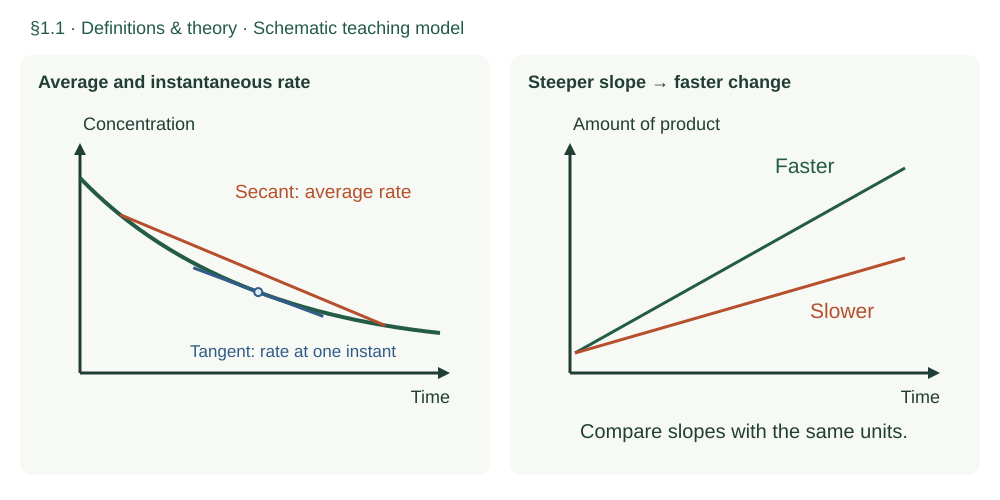
Equations & relationships
Average disappearance rate of A = −Δ[A]/Δt
For aA → bB: r = −(1/a) Δ[A]/Δt = (1/b) Δ[B]/Δt
Concentration-rate units: mol L⁻¹ s⁻¹
Derivation & reasoning
- Start from the definition Δ[A] = [A]final − [A]initial and Δt = tfinal − tinitial.
- A reactant is consumed, so Δ[A] is negative. The minus sign makes its disappearance rate positive.
- For each a mol of A consumed, b mol of B form. At fixed volume, −Δ[A]/a = Δ[B]/b.
- Divide this stoichiometric equality by Δt. Taking a progressively smaller time interval gives the instantaneous rate, using derivatives instead of finite changes.
Worked check
For 2A → B, [A] falls from 0.80 to 0.60 M in 10 s. A disappears at (0.80 − 0.60)/10 = 0.020 M s⁻¹. The normalized reaction rate and B formation rate are both 0.010 M s⁻¹.
Assumptions & common mistakesA gas-volume rate in mL s⁻¹ and a concentration rate in M s⁻¹ cannot be compared directly without conversion. Use the graph’s axes and the question’s definition of rate.
Practice toolkit · §1.1
Use these methods alongside the definitions, diagrams and worked check above. This section connects all 5 review questions and their prebuilt solutions to the skills below. Question links open the matching problem in the practice page.
Measure a reaction, then convert the rate
Choose a property tied to a reacting amount: solid mass loss, gas volume or pressure, solution colour, or timed titration. Convert the measured change to moles, use the balanced coefficient ratio, and divide by time or solution volume as required. Gas collection must account for gases consumed as well as gases formed.
n = m/M; n(gas) = Vgas/Vm; c = n/Vsolution; at the exercise’s STP, Vm = 22.4 L mol⁻¹
Read slopes and cumulative graphs
Average rate uses two readings over an interval. Instantaneous rate uses a tangent at the specified time; V/t from the origin usually gives a different value. A cumulative gas volume can keep increasing while each successive increment gets smaller. A horizontal product plateau means no further net formation.
Average gas rate = (V₂ − V₁)/(t₂ − t₁); instantaneous gas rate = tangent slope
Use the calibration graph before stoichiometry
Absorbance increases with concentration for the calibrated optical setup. Read concentration from the supplied calibration line, rather than assuming absorbance equals molarity. Convert product concentration changes to the requested reactant loss using the balanced equation. Record observations such as colour, bubbles and dissolving metal separately from their chemical explanation.
If the calibration is A = kc, then c = A/k. Use the graph’s slope k and units.
Apply in practice:Q5
Check the limiting reagent and the printed formula
A constant-rate extrapolation cannot consume more reagent than is available. If the question explicitly asks for an impossible extrapolation, distinguish that arithmetic result from the physically possible total. In Q2 the printed CuNO₃ equation must not silently be replaced with Cu(NO₃)₂; verify atom balance and state the assumption.
Maximum product moles = initial limiting-reactant moles × product/reactant coefficient ratio
Further explain
Why divide a concentration slope by a coefficient?
A balanced equation counts reaction events. One event of 2A → B removes two A particles for every B particle formed. The two concentration slopes therefore describe the same chemistry on different counting scales.
- Introduce the extent ξ (xi): an increase of 1 mol in ξ consumes 2 mol A and forms 1 mol B. Thus n(A) = n(A)₀ − 2ξ and n(B) = n(B)₀ + ξ.
- At constant solution volume V, divide by V: [A] = [A]₀ − 2ξ/V and [B] = [B]₀ + ξ/V.
- Differentiate with respect to time. Both −½ d[A]/dt and d[B]/dt equal (1/V)dξ/dt. This common quantity is the normalized reaction rate r.
- For a measured interval, replace derivatives by finite changes to obtain an average rate. A tangent gives the instantaneous value.
r = (1/V)dξ/dt = −½ d[A]/dt = d[B]/dt
Make it concrete. If A disappears at 0.030 M s⁻¹, B forms at 0.015 M s⁻¹. Dividing the A slope by 2 makes the two descriptions agree.
When this applies. Constant volume is essential for this concentration form: dilution can change [A] without consuming A.
Physical chemistry connection. §22.2, rates and reaction extent · printed pp. 794–795 · PDF pp. 826–827 ↗
1.2Factors Affecting Rates of Reaction
p. 15
Textbook pp. 15–23 · PDF pages 25–33
Definitions
- Concentration
- Amount of solute per solution volume; molarity c = n/V.
- Surface area
- The exposed area of a solid that is accessible to other reactants.
- Catalyst
- A substance that participates in a reaction pathway and is regenerated overall, increasing the rate.
Concepts
Reaction rate depends on the nature of the reactants, concentration, temperature, exposed surface area, and catalysts. More particles per volume usually increases collision frequency. Crushing a solid exposes more reaction sites. Heating increases molecular motion and the fraction of collisions energetic enough to react. A catalyst changes the pathway. These explanations connect the observations to collision theory in §1.3.
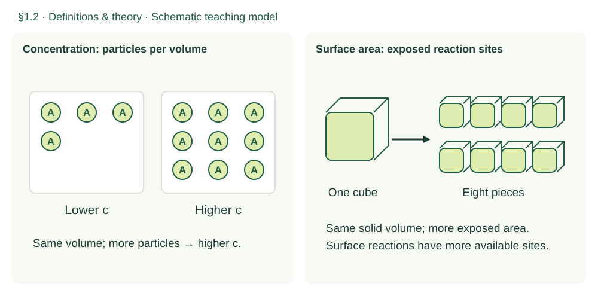
Equations & relationships
c = n/V
Same n, half the volume: cnew = n/(V/2) = 2c
For equal cubic pieces of side ℓ: total surface area / total volume = 6/ℓ
Derivation & reasoning
- Concentration is defined as amount divided by volume. Holding amount constant and reducing volume raises concentration.
- A cube has six faces, each with area ℓ², and volume ℓ³. Its area-to-volume ratio is 6ℓ²/ℓ³ = 6/ℓ.
- For a fixed total solid volume, making the pieces smaller raises total exposed area. This can increase the rate of a reaction occurring at the surface.
- Temperature and catalyst effects need the energy-and-pathway explanation of §§1.3–1.5; geometry alone does not derive their size.
Worked check
Splitting one 1 cm cube into eight 0.5 cm cubes keeps the total volume at 1 cm³. The area rises from 6 cm² to 8 × 6 × (0.5)² = 12 cm². More surface is available, although the rate need not exactly double.
Assumptions & common mistakesThere is no universal rule that doubling concentration doubles rate, or that a 10 °C increase doubles rate. Determine the relevant rate law and conditions.
Practice toolkit · §1.2
Use these methods alongside the definitions, diagrams and worked check above. This section connects all 7 review questions and their prebuilt solutions to the skills below. Question links open the matching problem in the practice page.
Classify the rate factors by phase
Nature of reactants, concentration, temperature and catalysts are general factors; exposed surface area is an additional factor for heterogeneous reactions at an interface. Powdering a solid creates accessible sites, whereas a homogeneous mixture already reacts throughout one phase. Fast ionic precipitation and slower bond-rearrangement reactions illustrate reactant identity.
Homogeneous: one phase. Heterogeneous: more than one phase; reaction at accessible interfaces.
Explain temperature and catalyst effects separately
Heating normally increases the fraction of collisions with enough energy. A catalyst supplies a different pathway and is regenerated. Examples include iron in ammonia synthesis, catalytic metals in exhaust converters, platinum or catalase for peroxide decomposition, and enzymes in photosynthetic reactions. Identify the catalytic species rather than treating any light-absorbing pigment as a universal catalyst.
Higher temperature changes particle energies; a catalyst changes the pathway.
Convert gas production into decomposition rate
Balance the decomposition first. For HCOOH → CO + H₂O, one mole of gas CO represents one mole of acid decomposed. Convert gas volume at the stated conditions to moles before dividing by time. Half the volume takes half the time only if a constant rate is assumed. A 10 °C rate-doubling estimate is a classroom approximation.
r(HCOOH) = V(CO)/(Vm Δt), for this 1:1 equation
Apply in practice:Q5
Rank particle pictures using both concentrations
Compare numbers of each reactant per unit volume, with temperature held fixed. Compressing the same particle inventory increases concentration; adding particles can do the same. In a simple bimolecular collision model, both reactant concentrations matter. A drawing can support a qualitative ranking without providing an exact measured rate law.
Simple encounter model: rate per volume ∝ [G][B]
Apply in practice:Q7
Separate a forward rate from a net change
Increasing the pressure of product CO₂ is not the same as increasing the concentration of an acid reactant attacking marble. It need not increase that forward reaction rate. In a reversible carbonate system it can also change the reverse reaction or equilibrium and therefore alter the net dissolution.
Net rate = forward rate − reverse rate
Apply in practice:Q4
Further explain
Which part of the rate does each factor change?
Separate how often particles meet from how likely each encounter is to succeed. Concentration changes encounter frequency; temperature changes motion and success probability; a catalyst changes the available pathway.
- For an elementary A + B reaction in a well-mixed dilute system, the encounter rate per volume scales with [A][B]. Doubling both concentrations gives four times as many encounters per volume per time at the same temperature.
- For a solid reacting at its surface, let j be the amount reacting per area per time. Then the amount rate is jS, where S is exposed surface area. Crushing increases S, but j may also depend on transport and surface condition.
- At fixed concentrations, the rate ratio equals the rate-constant ratio. In the Arrhenius model, divide k₂ = A exp(−Eₐ/RT₂) by k₁ = A exp(−Eₐ/RT₁); A cancels if it is approximately constant.
k₂/k₁ = exp[(Eₐ/R)(1/T₁ − 1/T₂)]
Make it concrete. For Eₐ = 50.0 kJ mol⁻¹, warming from 298 to 308 K gives k₂/k₁ ≈ 1.93. Another activation energy gives another factor; there is no universal doubling rule.
When this applies. Use kelvin and Eₐ = 50 000 J mol⁻¹ with R = 8.314 J mol⁻¹ K⁻¹. Surface rate and concentration rate have different units.
Physical chemistry connection. §22.5, temperature dependence · printed pp. 807–809 · PDF pp. 839–841 ↗ · §24.1(a), collision frequency · printed pp. 870–871 · PDF pp. 902–903 ↗
1.3Collision Theory
p. 24
Textbook pp. 24–35 · PDF pages 34–45
Definitions
- Effective collision
- A collision with sufficient energy and a suitable molecular orientation to form products.
- Activation energy, Eₐ
- The energy barrier between reactants and the activated configuration along a pathway.
- Activated complex
- The unstable arrangement of atoms near the top of the reaction barrier.
Concepts
Colliding is necessary in a collision model, but many encounters fail to react. Particles may lack the required energy or present the wrong atoms to one another. At higher temperature, a greater fraction can cross the barrier. A catalyst supplies another pathway with a lower effective barrier; it does not increase the sample’s temperature.
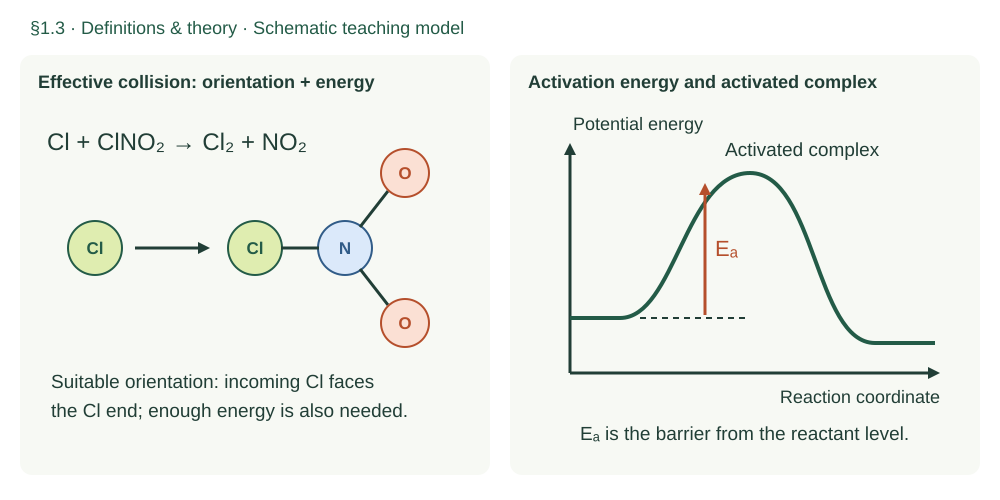
Equations & relationships
Possible unlike-particle pairs = NA × NB
For a simple elementary A + B step: r = k[A][B]
Effective encounters = total encounters × energetic fraction × orientation fraction
Derivation & reasoning
- If there are NA particles of A, each can encounter any of the NB particles of B. Counting the possible unlike pairs gives NA NB.
- At fixed volume and comparable conditions, the concentration factors for these pair encounters are proportional to [A][B].
- Only a fraction of encounters have enough energy and a productive orientation. For this simple model, include those factors in k.
- This motivates a bimolecular elementary-step rate law. It does not prove that a multistep overall reaction has the same concentration exponents.
Worked check
Three A particles and four B particles have 3 × 4 = 12 possible unlike pairs. Doubling A gives 24 pairs. This is a collision-counting model, not a count of successful reactions in one second.
Assumptions & common mistakesThe average particle energy is not the activation energy. A temperature distribution contains both higher- and lower-energy particles; the fraction above the barrier matters.
Explore / 01
A lower barrier. A faster reaction.
Compare illustrative energy pathways, then change temperature in a simple Arrhenius model.
UncatalyzedCatalyzed
Illustrative model: k = A exp(−Eₐ/RT), same A; Eₐ = 50 kJ mol⁻¹ or 40 kJ mol⁻¹ with catalyst. Relative k is compared with the uncatalyzed value at 298 K. This models a rate constant, not a measured reaction rate.
Practice toolkit · §1.3
Use these methods alongside the definitions, diagrams and worked check above. This section connects all 8 review questions and their prebuilt solutions to the skills below. Question links open the matching problem in the practice page.
Count effective collisions, not just encounters
A useful collision model combines encounter frequency with success probability. The same encounter must have sufficient energy and suitable orientation. In Cl + ClNO₂ → Cl₂ + NO₂, the incoming Cl atom must approach the bound chlorine end so that Cl–Cl can form as N–Cl breaks. Chlorine atoms are not chloride ions.
Effective-collision rate ≈ collision frequency × fraction energetically and geometrically suitable
Connect cutting, concentration and rate rankings
For eight cubes of half the original side, total volume and mass stay fixed but total surface doubles. Twice the rate follows only if all faces are exposed and rate is proportional to surface. Compare powder with a cube at equal acid concentration, then compare acid concentrations at equal geometry.
Area/volume of a cube = 6/ℓ; eight half-side cubes have twice the original exposed area
Apply concentration and volume multipliers
For a supplied rate law, multiply each concentration-change factor raised to its order. For r = k[A][B], tripling A and halving B multiplies rate by 1.5. Doubling solution volume at fixed amounts halves both concentrations, giving one-quarter the rate. If concentrations are unchanged, a rate increase points to k or another condition changing.
r₂/r₁ = (k₂/k₁)([A]₂/[A]₁)ᵐ([B]₂/[B]₁)ⁿ
Apply in practice:Q4
Predict the shape of a gas-production curve
Draw cumulative gas volume rising steeply at first, then more slowly, then reaching a plateau as a limiting reactant is exhausted. The slope is the rate. Explain the flattening through reduced acid availability and/or loss of solid surface, rather than claiming that the gas already collected disappears.
dVgas/dt decreases toward zero while Vgas approaches its final value
Apply in practice:Q5
Further explain
Where does the Arrhenius exponential come from?
A gas has a distribution of collision energies. Heating changes that distribution, making energetic encounters more common. A barrier therefore acts as an energy filter, rather than a requirement that every particle have the same energy.
- Write a collision-model rate as encounters per volume per time multiplied by the probability of a reactive encounter.
- Counting A–B encounters gives a factor [A][B]. Averaging an energy-dependent reactive collision cross-section over the thermal distribution produces an exp(−Eₐ/RT) factor in the simple collision model.
- Put collision geometry, relative speed and orientation effects into a prefactor A. Then r = k[A][B], with k ≈ A exp(−Eₐ/RT).
- Take a natural logarithm: ln k = ln A − (Eₐ/R)(1/T). A plot against 1/T has slope −Eₐ/R when A and Eₐ are effectively constant.
k ≈ A exp(−Eₐ/RT) → ln k = ln A − Eₐ/(RT)
Make it concrete. At 298 K, lowering a model barrier by 10.0 kJ mol⁻¹ at the same A multiplies k by exp[10 000/(8.314 × 298)] ≈ 56.6.
When this applies. The exponential is a model result for reactive encounters; it is not an exact universal formula for the fraction of all molecules above a chosen energy. Real prefactors can depend on temperature.
Physical chemistry connection. §22.5, Arrhenius parameters · printed pp. 807–809 · PDF pp. 839–841 ↗ · §24.1(b–c), energy and orientation requirements · printed pp. 871–874 · PDF pp. 903–906 ↗
1.4Potential Energy Diagrams
p. 36
Textbook pp. 36–49 · PDF pages 46–59
Definitions
- Enthalpy change, ΔH
- The difference Hproducts − Hreactants; at constant pressure with only pressure–volume work it equals heat absorbed by the system.
- Exothermic / endothermic
- An exothermic reaction has ΔH < 0; an endothermic reaction has ΔH > 0.
- Reaction coordinate
- A measure of progress along a molecular reaction pathway, used for the horizontal axis of an energy diagram.
Concepts
Read the starting level, ending level, and barrier separately. The height from reactants to the peak is the forward activation energy. The difference between the product and reactant levels gives the reaction energy change. Breaking bonds requires energy; making bonds releases energy. A catalyst changes the barrier and can introduce multiple peaks, while leaving the initial and final states unchanged.
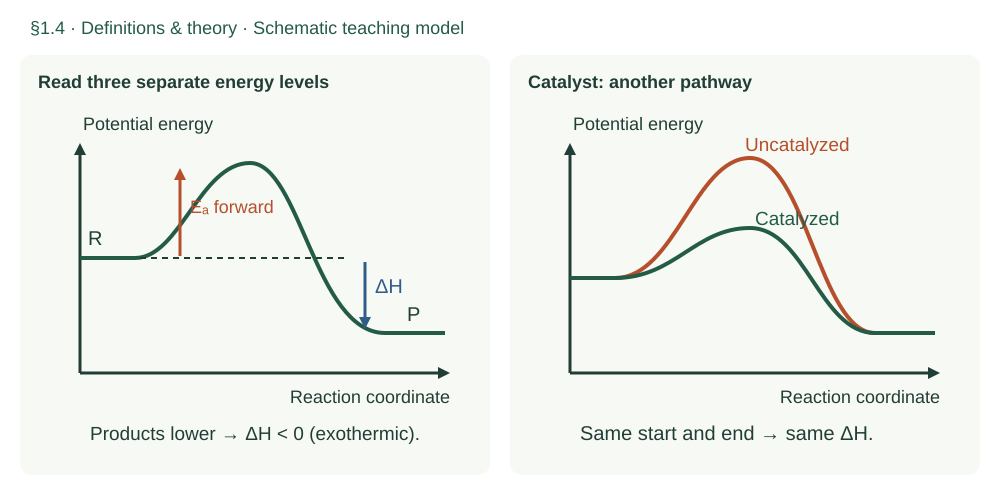
Equations & relationships
ΔH = HP − HR
Eₐ,forward = H‡ − HR; Eₐ,reverse = H‡ − HP
ΔH = Eₐ,forward − Eₐ,reverse
ΔH ≈ Σ(bond energies broken) − Σ(bond energies formed)
Derivation & reasoning
- Label the reactant level HR, product level HP, and common peak H‡ on the same energy scale.
- Subtract the reactant level from the peak to find the forward barrier; subtract the product level to find the reverse barrier.
- Subtract the two barriers: (H‡ − HR) − (H‡ − HP) = HP − HR = ΔH.
- For the bond-energy estimate, imagine breaking reactant bonds to separated atoms, then forming product bonds. Add the energy cost of breaking and the negative energy change of forming. Average bond energies give an approximation.
Worked check
If HR = 20, HP = −30, and H‡ = 100 kJ mol⁻¹, then Eₐ,forward = 80, Eₐ,reverse = 130, and ΔH = −50 kJ mol⁻¹. The reaction is exothermic even though it has a substantial barrier.
Assumptions & common mistakesThe horizontal axis is reaction progress, not time. A negative ΔH alone does not establish a fast reaction or determine equilibrium composition.
Practice toolkit · §1.4
Use these methods alongside the definitions, diagrams and worked check above. This section connects all 10 review questions and their prebuilt solutions to the skills below. Question links open the matching problem in the practice page.
Write and scale thermochemical equations
Balance atoms before attaching the heat term. Exothermic heat belongs on the product side and ΔH is negative; endothermic heat belongs on the reactant side and ΔH is positive. Multiplying the written equation multiplies ΔH; reversing it changes the sign. Two moles of water decomposed require twice the per-mole energy.
Reverse: ΔHnew = −ΔH. Multiply coefficients by n: ΔHnew = nΔH.
Read the energy reference for every arrow
Identify reactant, product and transition-state levels. Forward and reverse activation energies start from different plateaus. The absolute potential energy of an activated complex is measured from the chosen zero, whereas activation energy is a difference. A catalyst changes the pathway peaks but neither endpoint.
Eₐ,f = H‡ − HR; Eₐ,r = H‡ − HP; ΔH = HP − HR = Eₐ,f − Eₐ,r
Interpret an energy-distribution graph
On a kinetic-energy distribution, the fraction beyond Eₐ is the area to the right of the threshold, not the curve’s height at that energy. Heating changes the distribution; it does not lower the potential-energy barrier in this model. A catalyst lowers the required threshold. Compare speed using the barrier and conditions, not ΔH alone.
Energetically eligible fraction = area with collision energy ≥ Eₐ / total distribution area
Track kinetic and potential energy during approach
During an isolated encounter climbing the repulsive barrier, kinetic energy is converted into potential energy. Their sum remains constant. After passing the activated configuration, falling potential energy can become kinetic energy again. Draw complementary KE and PE changes under a constant total-energy line.
Etotal = KE + PE, for the isolated encounter
Apply in practice:Q9
Explain self-sustaining combustion
After ignition, an exothermic fire can heat neighbouring fuel enough to overcome its activation barrier. Continued burning still requires fuel, oxidant and enough retained heat. Bond breaking absorbs energy; bond formation releases energy. For an exothermic reaction, the latter release exceeds the former cost.
ΔH ≈ energy absorbed in bond breaking − energy released in bond formation
Further explain
Why can a downhill reaction still be slow?
The difference between the starting and ending energy levels answers a different question from the height of the intervening barrier. A low product level does not remove the climb needed to reach the transition state.
- On the same simplified energy profile, label reactants Hᵣ, products Hₚ and the transition-state level H‡.
- The forward climb is H‡ − Hᵣ; the reverse climb is H‡ − Hₚ. Subtract these expressions and the shared peak cancels.
- The result is Hₚ − Hᵣ = ΔH. A catalyst can change the peak or supply a multistep route, but it cannot change the enthalpies of the specified starting and ending states.
- For equilibrium direction, add the entropy contribution: ΔᵣG = ΔᵣH − TΔᵣS at the current composition. A negative ΔᵣG indicates a forward tendency; the barrier still controls how quickly change occurs.
(H‡ − Hᵣ) − (H‡ − Hₚ) = ΔH; ΔᵣG = ΔᵣH − TΔᵣS
Make it concrete. Reactants at 0, products at −40 and a peak at +80 kJ mol⁻¹ give forward and reverse climbs of 80 and 120 kJ mol⁻¹. The energy release is 40 kJ mol⁻¹, although a barrier remains.
When this applies. The barrier subtraction is exact for the levels on this common enthalpy profile. Experimental Arrhenius activation energies and potential-energy barriers need not be identical in more detailed models.
Physical chemistry connection. §3.5, Gibbs energy · printed pp. 95–96 · PDF pp. 127–128 ↗ · §22.5(b), reaction coordinate and activated complex · printed pp. 809 · PDF pp. 841 ↗
1.5Reaction Mechanisms, Catalysis, and Rate Laws
p. 50
Textbook pp. 50–62 · PDF pages 60–72
Definitions
- Reaction mechanism
- A proposed sequence of elementary steps that sums to the overall reaction.
- Intermediate / catalyst
- An intermediate is formed and later consumed; a catalyst is consumed and later regenerated.
- Rate law / reaction order
- A rate law relates rate to concentration; each concentration exponent is its order with respect to that reactant.
Concepts
A mechanism must reproduce the overall balanced equation and be compatible with the measured rate law. A slow step can control the overall rate when later steps are sufficiently fast. Elementary-step molecularity can determine a step’s rate law; overall reaction coefficients generally cannot. If a proposed rate law contains an intermediate, an additional justified relation is needed to express it in measurable reactant concentrations.
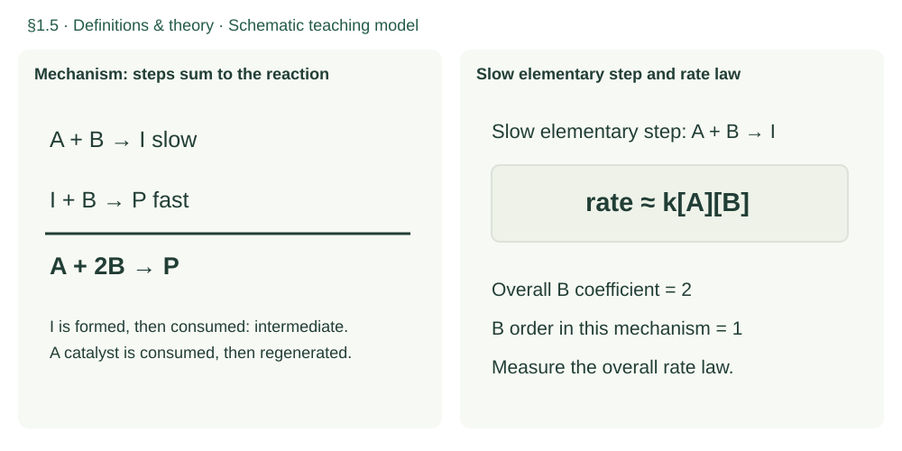
Equations & relationships
r = k[A]ᵐ[B]ⁿ; overall order = m + n
At fixed [B] and temperature: r₂/r₁ = ([A]₂/[A]₁)ᵐ
m = log(r₂/r₁) / log([A]₂/[A]₁)
Derivation & reasoning
- Write the empirical rate law for two experiments at the same temperature.
- Divide the two equations. With [B] unchanged, k and [B]ⁿ cancel, leaving the concentration ratio raised to m.
- Take logarithms and solve for m. Repeat with A fixed to determine n.
- For a simple mechanism A + B → I (slow), then I + B → P (fast), the steps sum to A + 2B → P. The slow elementary step predicts r ≈ k[A][B], showing why the overall B coefficient need not be its order.
Worked check
If doubling [A] at constant [B] makes the rate four times larger, 4 = 2ᵐ, so m = 2. If doubling [B] leaves the rate unchanged, n = 0. Then r = k[A]², and k has units M⁻¹ s⁻¹.
Assumptions & common mistakesAn empirical rate law must be measured; it is not derived merely by balancing the overall equation. Matching one rate law supports a mechanism but does not uniquely prove it.
Practice toolkit · §1.5
Use these methods alongside the definitions, diagrams and worked check above. This section connects all 10 review questions and their prebuilt solutions to the skills below. Question links open the matching problem in the practice page.
Construct and test a mechanism
Add elementary steps, multiply a repeated step when needed, and cancel species appearing on both sides. The remaining equation must match the overall reaction in both atoms and charge. A proposed mechanism must also agree with measured kinetics; a balanced net equation alone cannot identify the steps.
Overall reaction = algebraic sum of the elementary steps
Distinguish catalyst, intermediate and phase
An intermediate is made and later consumed; a catalyst is used and later regenerated. Neither remains in the net equation. Compare catalyst and reactant phases to classify homogeneous or heterogeneous catalysis. In the iodide/peroxide mechanism, IO⁻ is intermediate and I⁻ is catalyst.
Intermediate: absent initially, produced then consumed. Catalyst: present initially, consumed then regenerated.
Read a multistep energy profile
Each peak represents an activated configuration and each intervening valley an intermediate configuration. Compare a step’s rise from its own preceding minimum when using the textbook rate-determining-step model. A high absolute peak is not automatically the largest local barrier. Specify the starting level when an exercise asks for “the” forward activation energy.
Local Eₐ for step i = energy of peak i − energy of its preceding minimum
Use a slow elementary step to test rate dependence
For a simple limiting elementary step, its reactant molecularity predicts the step rate law. A slow step containing no CO can explain independence from [CO], even if CO is consumed overall. For more complicated mechanisms, intermediates require a justified elimination relation; do not assign overall orders from the net coefficients.
If slow elementary step is A + B → I: r ≈ k[A][B]
Sketch a complete reversible profile
Label potential energy and reaction progress, both endpoint levels, all peaks and valleys, forward/reverse barriers, and the sign of ΔH. An endothermic forward reaction ends higher. Show a catalyzed alternative with lower barriers and unchanged endpoints. Simultaneous encounters of many reactants are improbable, supporting multistep descriptions.
The horizontal reaction coordinate is progress, not elapsed time.
Further explain
How can a mechanism create an unexpected reaction order?
An intermediate links elementary steps. Its concentration may depend on earlier equilibria, so an observed rate law can contain powers that do not resemble the overall balanced equation.
- Consider the model mechanism 2A ⇌ I (fast pre-equilibrium), followed by I + B → P (slow). Adding the steps gives 2A + B → P.
- The slow elementary step gives r ≈ k₂[I][B]. The unmeasured intermediate must be eliminated from this expression.
- For the fast equilibrium, define the concentration-form constant Kc,pre = [I]/[A]². Rearranging gives [I] = Kc,pre[A]².
- Substitute: r ≈ k₂Kc,pre[A]²[B] = kobs[A]²[B]. The measured second order in A now has a mechanistic explanation.
r ≈ k₂[I][B] ≈ k₂Kc,pre[A]²[B] = kobs[A]²[B]
Make it concrete. If Kc,pre has units M⁻¹ and k₂ has units M⁻¹ s⁻¹, kobs has units M⁻² s⁻¹. Multiplying by [A]²[B] gives the required M s⁻¹.
When this applies. This derivation assumes the first step stays near equilibrium while the slow step drains I. It is a proposed model, not proof of a unique mechanism. Kc,pre here uses the school concentration convention.
Physical chemistry connection. §22.6, elementary steps · printed pp. 809–810 · PDF pp. 841–842 ↗ · §22.7(e), pre-equilibria · printed pp. 815–816 · PDF pp. 847–848 ↗
02
Chemical Equilibrium
Follow a reversible system from dynamic balance to equilibrium expressions and calculations.
Textbook pp. 63–142 · 6 sections
2.1Introduction to Dynamic Equilibrium
p. 64
Textbook pp. 64–73 · PDF pages 74–83
Definitions
- Reversible reaction
- A reaction for which forward and reverse conversions are possible under the stated conditions.
- Dynamic equilibrium
- A state in which forward and reverse reaction rates are equal, while both processes continue.
- Equilibrium position
- The relative amounts of reactants and products present at equilibrium.
Concepts
A closed reacting system can reach constant composition without stopping its molecular changes. Initially, a reactant-rich mixture often forms products faster than it reforms reactants. As composition changes, the rates approach equality. At equilibrium, measurable macroscopic properties remain constant at fixed conditions, but reactant and product concentrations need not be equal.
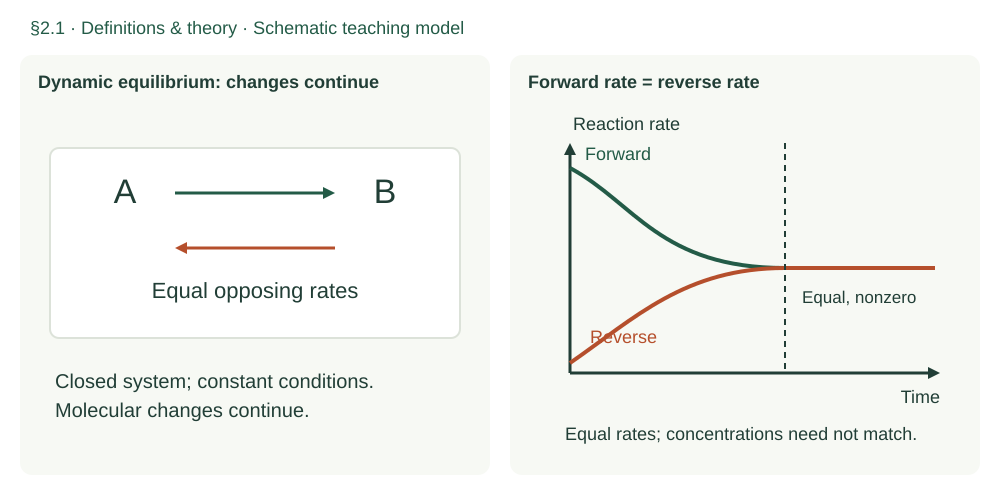
Equations & relationships
At equilibrium: rforward = rreverse
For A ⇌ B at fixed volume: Δ[B]/Δt = rforward − rreverse = 0
Derivation & reasoning
- Formation of B adds to [B], while the reverse reaction removes B. The net change is the forward rate minus the reverse rate.
- At equilibrium those two rates are equal, so their difference is zero.
- Zero net concentration change follows from equal opposing rates. It does not require either rate to be zero.
- For reactions with other coefficients, include the appropriate stoichiometric factors when converting reaction rate to each species’ concentration change.
Worked check
A mixture can contain 0.20 M A and 0.80 M B while both directions proceed at 0.010 M s⁻¹. The concentrations stay constant even though they are unequal.
Assumptions & common mistakesA constant-looking sample is not sufficient evidence of dynamic equilibrium: a reaction may instead be too slow to detect or have run effectively to completion.
Practice toolkit · §2.1
Use these methods alongside the definitions, diagrams and worked check above. This section connects all 11 review questions and their prebuilt solutions to the skills below. Question links open the matching problem in the practice page.
Distinguish equilibrium from an open steady state
Constant appearance alone is insufficient. Chemical equilibrium requires reversible opposing processes in a closed material inventory under fixed conditions. A candle or a fed reaction cycle can maintain steady amounts through continuing supply and removal without equal forward and exact reverse reactions. A temperature-induced change alone does not prove prior equilibrium.
Equilibrium: equal opposing fluxes of the same reversible process. Steady state: constant amounts can be maintained by throughput.
Use stoichiometry for nonzero opposing fluxes
At equilibrium a given species is consumed and produced equally quickly, but different species have fluxes set by the balanced coefficients. Convert molar to mass flux using each species’ own molar mass. Equal mole fluxes of two substances need not be equal gram fluxes.
For N₂ + 3H₂ ⇌ 2NH₃: |dn(N₂)/dt| : |dn(H₂)/dt| : |dn(NH₃)/dt| = 1 : 3 : 2
Apply dynamic balance to phase changes and steps
In a sealed liquid–vapour system, vapour accumulates until condensation equals evaporation. Molecular exchange continues at a constant liquid level. In true equilibrium, every reversible elementary step is balanced by its own reverse; equal rates in two different reactions of a consuming cycle do not establish equilibrium.
Closed liquid ⇌ vapour: evaporation rate = condensation rate at phase equilibrium
Draw rate and concentration graphs separately
Starting with reactants only, the reverse rate begins at zero while products build up. The two rates become equal and nonzero; each concentration becomes constant but concentrations need not be equal. If all reactants are removed, the forward rate initially falls to zero, then reverse reaction restores some reactants until a new equilibrium is reached.
Constant concentration means zero net change; it does not mean zero forward or reverse rate.
Further explain
How do equal rates connect to minimum Gibbs energy?
Kinetics describes the opposing molecular traffic. Thermodynamics describes the net driving tendency. At equilibrium both descriptions agree: forward and reverse events continue, but there is no preferred net conversion.
- For the elementary model A ⇌ B, write rforward = kf[A] and rreverse = kr[B]. Their difference is d[B]/dt.
- At equilibrium the difference vanishes, so [B]/[A] = kf/kr. Equal rates do not require equal concentrations when the two rate constants differ.
- The chemical potential μ is the Gibbs-energy change per added mole of a species in the mixture. For A → B, ΔᵣG = μB − μA.
- When μA exceeds μB, forward conversion lowers G. At equilibrium μA = μB, so the slope dG/dξ is zero at the stable minimum.
kf[A]eq = kr[B]eq; ΔᵣG = μB − μA = 0 at equilibrium
Make it concrete. If kf = 4kr, equilibrium has four times as much B as A in this model. Both directions still have equal rates.
When this applies. The simple rate-constant ratio follows from the stated elementary model. The Gibbs-energy criterion applies generally at fixed temperature and pressure; equilibrium does not mean that total G equals zero.
Physical chemistry connection. §§7.1–7.2, equilibrium and Gibbs energy · printed pp. 200–203 · PDF pp. 232–235 ↗ · §22.4, reactions approaching equilibrium · printed pp. 804–805 · PDF pp. 836–837 ↗
2.2Le Chatelier’s Principle
p. 74
Textbook pp. 74–85 · PDF pages 84–95
Definitions
- Le Chatelier’s principle
- When a system at equilibrium is disturbed, its net reaction tends to partially oppose the disturbance as equilibrium is re-established.
- Shift right / left
- Net conversion toward products / toward reactants after a disturbance.
- Common-ion effect
- A shift caused by adding an ion already involved in an equilibrium.
Concepts
Adding a dissolved reactant usually favours its consumption; removing a product usually favours its replacement. The immediate change imposed by the experiment and the later chemical response are separate events. A shift partially offsets a concentration disturbance; it need not restore the original concentration. A catalyst speeds both directions and does not change the equilibrium composition.
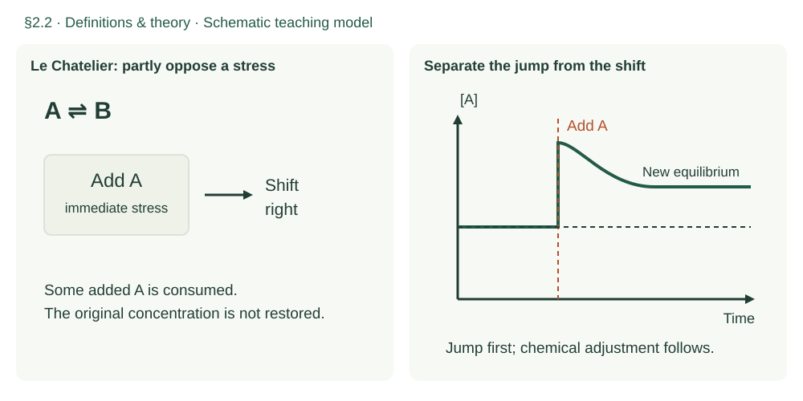
Equations & relationships
A ⇌ B: Q = [B]/[A]
Q < K: net forward; Q > K: net reverse; Q = K: equilibrium
Derivation & reasoning
- Begin at equilibrium, where [B]/[A] = K. Keep temperature fixed so K is unchanged.
- Add A without appreciably changing volume. The denominator increases immediately, so the new ratio is below K.
- Net conversion of A to B raises the numerator and reduces the denominator until the ratio returns to K.
- The quotient reasoning, developed fully in §2.5, explains the concentration shift rather than treating it as a memorized arrow rule.
Worked check
If K = 4, [A] = 0.10 M and [B] = 0.40 M are at equilibrium. Immediately increasing [A] to 0.20 M gives Q = 2. The subsequent net reaction forms B.
Assumptions & common mistakesAdding more pure solid does not change the equilibrium position while that solid phase is already present. Its amount is not included as a variable concentration in K.
Practice toolkit · §2.2
Use these methods alongside the definitions, diagrams and worked check above. This section connects all 16 review questions and their prebuilt solutions to the skills below. Question links open the matching problem in the practice page.
Predict a shift and compare with the old equilibrium
Adding a variable-concentration reactant or removing a product usually favours the forward direction; the opposite stresses favour reverse. Include both the imposed jump and later reaction when comparing a final concentration with its original value. Colour and pH can reveal the changing form, but the system only partly offsets the imposed change.
At fixed temperature, restore Q = K; do not assume every old concentration is restored.
Draw the immediate jump and the relaxation
At fixed volume, only the directly added or removed species has an immediate concentration jump; other species change as reaction proceeds. The immediately affected reaction rate follows the relevant concentration dependence, then the two rates converge. The chemical changes have coefficient ratios; a catalyst changes approach speed without shifting equilibrium.
For Ni(s) + 4CO ⇌ Ni(CO)₄: relaxation Δ[CO] = −4Δ[Ni(CO)₄]
Recognize unchanged pure-solid activity
Adding a catalyst or exposing more of an existing pure solid changes kinetics rather than K or equilibrium position. A pure solid is omitted from the mass-action expression while that phase remains. Do not confuse increasing its surface with increasing a dissolved reactant concentration.
Pure-solid activity is constant while the phase exists.
Apply in practice:Q9
Follow coupled equilibria through a shared species
Treat the first removal or conversion, then pass its effect to the linked equilibrium. Ag⁺ can remove chloride as AgCl and change a copper-complex colour; acid can remove free NH₃ as NH₄⁺ and dissociate an ammonia complex; protonating acetate can encourage a sparingly soluble acetate salt to dissolve.
A side reaction lowers a free-ion concentration even when the total amount of that element is unchanged.
Interpret product-favoured and persistent throughput
A large K describes a powered concentration ratio, not a rule that each product concentration exceeds every reactant concentration. An excess reactant can remain abundant. Continuous feed or product removal can keep an open system displaced from equilibrium; a catalyst alone cannot sustain a net conversion indefinitely in a closed system.
For 2NO + O₂ ⇌ 2NO₂: K = [NO₂]²/([NO]²[O₂])
Further explain
Why does comparing Q with K predict a shift?
Q measures the current product-to-reactant activity ratio. K is the ratio at equilibrium at the stated temperature. Their comparison tells us the sign of the reaction’s Gibbs-energy slope.
- Start with ΔᵣG = ΔᵣG° + RT ln Q. At equilibrium Q = K and ΔᵣG = 0, giving ΔᵣG° = −RT ln K.
- Substitute this equilibrium relation back into the first equation: ΔᵣG = RT(ln Q − ln K) = RT ln(Q/K).
- Because R and absolute T are positive, Q < K makes ln(Q/K) negative: forward reaction lowers G. Q > K makes it positive, so reverse reaction lowers G.
- Adding a reactant normally lowers Q immediately. The subsequent reaction raises Q back toward K; it does not undo the entire externally imposed addition.
ΔᵣG = RT ln(Q/K)
Make it concrete. For K = 4 and Q = 2 at 298 K, ΔᵣG = (8.314)(298)ln(½) ≈ −1.72 kJ mol⁻¹ of reaction. The net tendency is forward.
When this applies. This thermodynamic equation uses dimensionless activities. A catalyst changes the speed of equilibration but changes neither K nor the sign criterion.
Physical chemistry connection. §7.2, reaction quotient and equilibrium constant · printed pp. 202–206 · PDF pp. 234–238 ↗
2.3How Equilibria Respond to Volume and Temperature Changes
p. 86
Textbook pp. 86–103 · PDF pages 96–113
Definitions
- Partial pressure
- The contribution a gas makes to the total pressure of a mixture.
- Volume disturbance
- A change that simultaneously changes concentrations or partial pressures.
- Temperature disturbance
- A change that alters the equilibrium constant as well as reaction rates.
Concepts
At constant temperature, compressing an ideal gaseous equilibrium favours the side with fewer gas particles when the gas coefficients differ. Expansion favours the side with more. In the simple dilute-solution model, dilution similarly favours the side with more dissolved particles counted in the equilibrium expression; omit pure solids and the liquid solvent. Heating favours the endothermic direction; cooling favours the exothermic direction. Treat heat as a bookkeeping term on the appropriate side of a thermochemical equation, not as a concentration term in K.
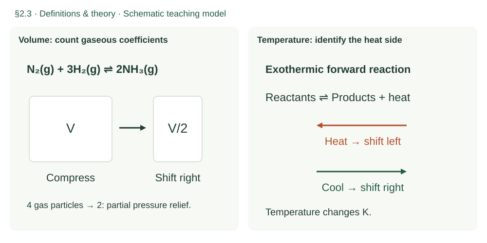
Equations & relationships
For aA(g) + bB(g) ⇌ cC(g) + dD(g): Δn = c + d − a − b
If every gas concentration is multiplied by f: Qnew = f^Δn Qold
At fixed n and T: concentration ∝ 1/V
Derivation & reasoning
- At fixed gas amounts, reducing the volume by a factor f multiplies every gas concentration by f.
- Insert f[A], f[B], f[C], and f[D] into the quotient. The numerator gains f^(c+d), and the denominator gains f^(a+b).
- Therefore Qnew = f^Δn K for an initially equilibrated mixture. For compression f > 1 and fewer gas moles on the product side, Δn < 0, so Qnew < K and the reaction shifts forward.
- The same scaling applies to aqueous concentration factors when the dilute model holds. If dilution halves every included concentration, f = 1/2; use the coefficient difference for dissolved species to find the immediate Q change. Pure solids and liquids do not contribute factors of f.
- For temperature, use the reaction’s heat direction. Heating an exothermic forward reaction favours reverse conversion and lowers its K; heating an endothermic forward reaction raises its K.
Worked check
For N₂(g) + 3H₂(g) ⇌ 2NH₃(g), halving volume gives f = 2 and Δn = −2. Immediately Qnew = K/4, so ammonia formation is favoured. If the forward reaction is exothermic, heating instead favours reactants.
Assumptions & common mistakesAdding inert gas at constant volume changes total pressure but not reactant partial pressures in the ideal model, so there is no shift. At constant total pressure, adding inert gas expands the mixture and can cause a shift.
Practice toolkit · §2.3
Use these methods alongside the definitions, diagrams and worked check above. This section connects all 22 review questions and their prebuilt solutions to the skills below. Question links open the matching problem in the practice page.
Handle volume changes before a chemical shift
Immediately multiply every variable gas concentration by Vold/Vnew, then evaluate Q and determine the shift. Count only gas coefficients for gas compression; exclude pure solids and liquids. In the dilute aqueous model, dilution favours more dissolved particles. Equal total powers mean the common concentration scaling leaves Q unchanged.
Qimmediate = K(Vold/Vnew)^Δν, where Δν = sum of included product coefficients − sum of included reactant coefficients
Distinguish amount from concentration
A shift can increase the number of free ions while their concentration remains below its original value after dilution. Compression changes both amount through reaction and volume directly. Determine each final concentration from n/V rather than deciding from shift direction alone; arbitrary initial compositions can make simple sign tables insufficient.
Concentration ratio final/initial = (nfinal/ninitial)(Vinitial/Vfinal)
Use thermal response to infer enthalpy and K
Heating favours the endothermic direction and cooling favours the exothermic direction. Infer the heat side from an observed colour or composition shift. At fixed volume a temperature change causes no direct material-addition concentration jump, but subsequent reaction changes concentrations. The forward endothermic K increases on heating; an exothermic K decreases.
Heat on reactant side ↔ endothermic forward; heat on product side ↔ exothermic forward
Explain unequal changes in opposing rates
Both opposing rate constants usually increase on heating, but the higher-barrier endothermic direction has a larger fractional sensitivity in the Arrhenius model. Volume changes instead change concentration factors. Exact jump factors require supplied or justified rate laws; do not infer them universally from overall coefficients.
For approximately constant A and Eₐ: d(ln k)/dT = Eₐ/(RT²)
Separate equilibrium yield, speed and apparatus
For exothermic ammonia formation, cooling improves equilibrium yield but slows approach; a catalyst improves speed and pressure can favour fewer gas moles. With an unregulated apparatus, addition, compression and heating may occur together and have competing effects. State fixed-temperature, fixed-volume or fixed-pressure assumptions before combining tendencies.
A favourable K and a fast production rate are separate design goals.
Further explain
Why do compression and heating need different equations?
Compression changes the current gas partial pressures. Heating also changes the equilibrium constant itself. Keeping those effects distinct turns the usual shift rules into a calculation.
- For ideal gases, use activities aᵢ = pᵢ/p°. At constant temperature, changing V to V/f multiplies each partial pressure by f before reaction occurs.
- For aA + bB ⇌ cC + dD, substituting fpᵢ into Q gives Qnew = f^(c+d−a−b)Qold = f^Δn Qold. Compare this new quotient with the unchanged K.
- For heating, start from ln K = −ΔᵣG°/(RT). The Gibbs–Helmholtz relation d(ΔᵣG°/T)/dT = −ΔᵣH°/T² gives d ln K/dT = ΔᵣH°/(RT²).
- If ΔᵣH° is approximately constant, integrate between T₁ and T₂. Since the integral of 1/T² is −1/T, ln(K₂/K₁) = −(ΔᵣH°/R)(1/T₂ − 1/T₁).
Qnew = f^Δn Qold; ln(K₂/K₁) ≈ −(ΔᵣH°/R)(1/T₂ − 1/T₁)
Make it concrete. For an exothermic reaction with ΔᵣH° = −50.0 kJ mol⁻¹, heating from 298 to 308 K gives K₂/K₁ ≈ 0.519. Heating can increase reaction rates while decreasing the equilibrium product preference.
When this applies. Use partial pressures and kelvin. A pure solid contributes no compression factor. The integrated temperature formula assumes nearly constant reaction enthalpy over the range.
Physical chemistry connection. §§7.3–7.4, pressure response and van ’t Hoff equation · printed pp. 210–214 · PDF pp. 242–246 ↗
2.4Entropy Change versus Enthalpy Change
p. 104
Textbook pp. 104–114 · PDF pages 114–124
Definitions
- Entropy, S
- A state property connected to the number of accessible microscopic arrangements and the dispersal of energy; molar entropy has units J mol⁻¹ K⁻¹.
- Enthalpy tendency
- Other factors equal, lower enthalpy favours a state energetically.
- Entropy tendency
- More accessible arrangements favour a state statistically; the entropy of system plus surroundings controls spontaneity.
Concepts
The book compares the tendency toward lower enthalpy with the tendency toward higher entropy. Increasing gas particles or changing a substance from solid to liquid to gas often increases entropy. These are useful trends, not universal proofs. When the two tendencies oppose, temperature and their magnitudes matter. Equilibrium can contain appreciable reactants and products; opposing tendencies alone do not quantify their proportions.
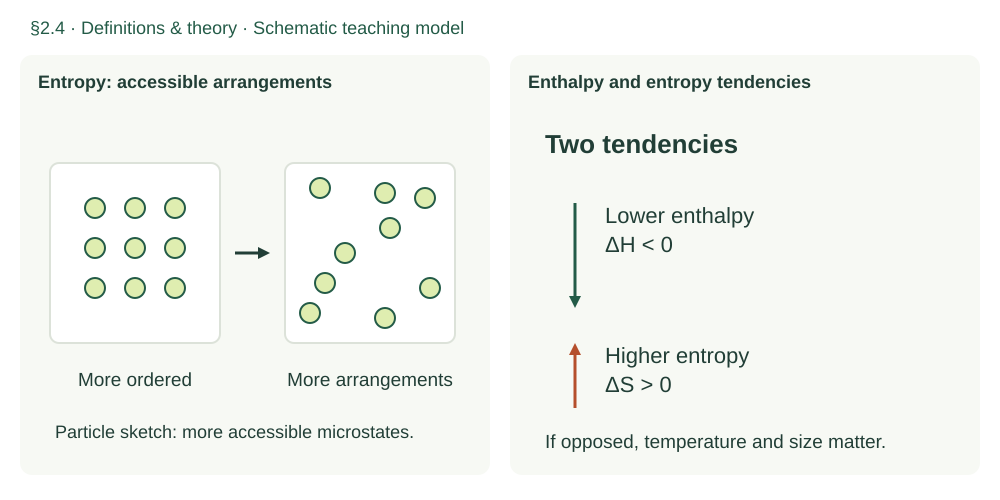
Equations & relationships
ΔH = Hproducts − Hreactants
ΔS°reaction = ΣνS°products − ΣνS°reactants
For the same substance, typically: S(gas) > S(liquid) > S(solid)
Derivation & reasoning
- A reaction property change is the final total minus the initial total. Each balanced coefficient ν counts how many moles contribute.
- Multiply each tabulated standard molar entropy by its coefficient, add the product contributions, and subtract the reactant contributions.
- A positive result means the system’s entropy increases in the forward direction. A negative enthalpy change means the forward direction releases heat at constant pressure.
- If ΔH < 0 and ΔS > 0, both classroom tendencies favour products. If ΔH > 0 and ΔS < 0, both oppose forward reaction. If the signs match, the tendencies compete; these sign arguments do not supply K.
Worked check
For exothermic N₂(g) + 3H₂(g) ⇌ 2NH₃(g), the enthalpy tendency favours products. The reduction from four to two gas particles suggests the entropy tendency favours reactants. This explains the competition qualitatively; it does not establish a numerical yield.
Assumptions & common mistakes“Disorder” is a memory aid. Do not claim that all dissolving increases entropy, or that every exothermic process is spontaneous. The “Further explain” section below quantifies this competition using Gibbs energy.
Practice toolkit · §2.4
Use these methods alongside the definitions, diagrams and worked check above. This section connects all 8 review questions and their prebuilt solutions to the skills below. Question links open the matching problem in the practice page.
Predict entropy using several trends
For a comparable substance, gas generally has greater entropy than liquid or solid. More gas particles often increases reaction entropy. At equal gas coefficients, molecular complexity, mass and actual molar-entropy data matter; equal counts do not force ΔS = 0. These trends need comparable conditions and are not universal ordering proofs.
ΔS° = ΣνS°(products) − ΣνS°(reactants), when tabulated values are supplied
Combine the two thermodynamic tendencies
Lower enthalpy and higher entropy both favour products in the textbook model. If the drives oppose, their magnitudes and temperature matter. Use a stated opposing-drive condition to infer a missing sign, then use the heat side to predict a cooling shift. Preserve phase labels because liquid versus gaseous water can change the entropy argument.
ΔG = ΔH − TΔS; compare TΔS and ΔH in consistent energy units
Keep qualitative predictions within their limits
“Almost complete” means strongly product-favoured at the stated conditions, not exactly zero reactants or an automatically fast reaction. A very small K can arise from one dominant unfavourable contribution; both sign tendencies need not oppose products. Finite K and composition-dependent chemical potentials allow a residual amount of reactants.
ΔG = ΔG° + RT ln Q; ΔG° = −RT ln K
Further explain
Where does ΔG = ΔH − TΔS come from?
Spontaneity depends on the entropy change of the system plus its surroundings. Heat released by a reaction can increase the surroundings’ entropy even when the reacting system becomes more ordered.
- At constant pressure with only pressure–volume work, the heat absorbed by the system is qsystem = ΔH. A thermal reservoir at temperature T receives −ΔH.
- Its entropy change is therefore ΔSsurroundings = −ΔH/T. Add the system change: ΔStotal = ΔS − ΔH/T.
- Multiply by −T: −TΔStotal = ΔH − TΔS. Define G = H − TS; for a change at constant T this right-hand side is ΔG.
- Thus ΔStotal > 0 corresponds to ΔG < 0. At equilibrium, an infinitesimal reaction advancement has ΔᵣG = 0.
ΔStotal = ΔS − ΔH/T; ΔG = ΔH − TΔS = −TΔStotal
Make it concrete. If ΔᵣH° = +20.0 kJ mol⁻¹ and ΔᵣS° = +100 J mol⁻¹ K⁻¹, then at 298 K, ΔᵣG° = 20.0 − 298(0.100) = −9.8 kJ mol⁻¹. The entropy contribution outweighs the endothermic cost.
When this applies. Convert entropy to kJ when enthalpy is in kJ. A standard-state ΔᵣG° predicts K; at a particular mixture composition use ΔᵣG = ΔᵣG° + RT ln Q. A sign alone does not give the reaction speed.
Physical chemistry connection. §3.5, combining the system and surroundings · printed pp. 95–98 · PDF pp. 127–130 ↗ · §7.2, enthalpy and entropy contributions to K · printed pp. 208 · PDF pp. 240 ↗
2.5The Equilibrium Constant
p. 115
Textbook pp. 115–128 · PDF pages 125–138
Definitions
- Equilibrium constant, K
- At a specified temperature, the equilibrium value of the product-to-reactant expression for a particular balanced reaction.
- Reaction quotient, Q
- The same expression evaluated using the current composition, which may not be at equilibrium.
- Homogeneous / heterogeneous equilibrium
- An equilibrium involving one phase / more than one phase.
Concepts
Write each dissolved or gaseous species to the power of its balanced coefficient, with products above reactants. Omit pure solids and pure liquids. A large K favours products in the expression, but does not imply a fast reaction. Temperature changes K; changing concentration at fixed temperature changes Q. Here the school concentration convention is used. Thermodynamic constants use dimensionless activities; dilute-solution concentrations approximate them.
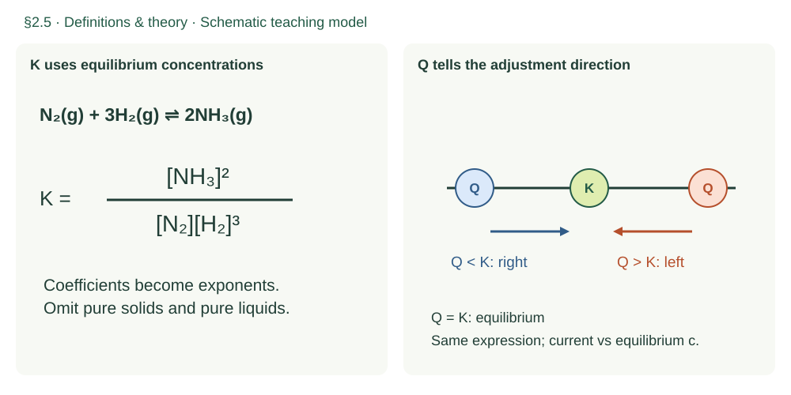
Equations & relationships
aA + bB ⇌ cC + dD: Kc = [C]ᶜ[D]ᵈ / ([A]ᵃ[B]ᵇ)
For H₂ + I₂ ⇌ 2HI: Kc = [HI]² / ([H₂][I₂])
Reverse the equation: Knew = 1/K; multiply coefficients by n: Knew = Kⁿ
Derivation & reasoning
- The textbook motivates the H₂/I₂ expression using the model rate laws rf = kf[H₂][I₂] and rr = kr[HI]².
- At equilibrium set rf = rr and rearrange: kf/kr = [HI]²/([H₂][I₂]). At a fixed temperature the rate-constant ratio is a constant in this model.
- For general reactions, use the law of mass action to construct K from stoichiometric coefficients. The simple rate-law argument is illustrative; overall coefficients do not generally determine experimental rate laws.
- Reversing the reaction swaps numerator and denominator. Multiplying every coefficient raises each factor, and therefore K, to the same power. Adding reactions multiplies their K values.
Worked check
For H₂ + I₂ ⇌ 2HI, equilibrium concentrations 0.20 M, 0.20 M, and 0.40 M give Kc = 0.40²/(0.20 × 0.20) = 4.0. For 2HI ⇌ H₂ + I₂, Kc = 0.25.
Assumptions & common mistakesUse equilibrium concentrations for K, current concentrations for Q. The omission of a pure phase assumes that phase exists; the constant does not guarantee an unlimited supply of solid.
Explore / 02
Which way will the reaction move?
For H₂ + I₂ ⇌ 2HI with illustrative Kc = 4.00, enter current concentrations to compare Q with K.
Q = [HI]²/([H₂][I₂]). These are trial concentrations, not calculated final equilibrium values. Temperature and K are held fixed.
Practice toolkit · §2.5
Use these methods alongside the definitions, diagrams and worked check above. This section connects all 14 review questions and their prebuilt solutions to the skills below. Question links open the matching problem in the practice page.
Build K with coefficients and phase labels
Balance the equation, use molar concentrations rather than mole amounts, raise each included species to its coefficient, and omit pure solids and liquids. Keep gas and aqueous versions of the same chemical distinct. Coefficients describe changes in amounts, not the equilibrium amounts themselves.
Kc = product of included product concentrations^coefficients / product of included reactant concentrations^coefficients
Relate supplied kinetic laws and equilibrium
Equate the supplied forward and reverse rates and rearrange. The resulting ratio of constants gives K only for the compatible rate-law pair provided; an arbitrary experimental rate law cannot be derived from overall stoichiometry.
If rf = kf[A]ᵃ and rr = kr[B]ᵇ as supplied: K = [B]ᵇ/[A]ᵃ = kf/kr
Apply in practice:Q1
Calculate Q, missing concentrations and post-stress values
Use c = n/V first. Solve the equilibrium expression for a missing equilibrium concentration, retaining the physical root. For a volume change, first compute all immediate diluted concentrations and Q, then apply stoichiometric changes to reach K again.
Q < K → net forward; Q > K → net reverse; Q = K → equilibrium
Transform a reaction and transform its K
Reversing an equation inverts its constant. Multiplying all coefficients by a factor raises K to that power; halving takes a square root. Adding compatible reactions multiplies their constants. Always associate the numerical constant with the exact written equation and temperature.
Reverse: 1/K. Scale by n: Kⁿ. Sum reactions: Koverall = K₁K₂.
Separate K, composition and yield comparisons
At fixed temperature, adding material, changing volume or adding a catalyst does not change K. K alone does not rank percent yields of differently written reactions or establish a simple total-amount comparison, especially when solids are omitted or total concentration powers differ. Use ICE tables for actual conversion.
Only a temperature change among the usual listed stresses changes K.
Check whether every pure phase remains
For 2KClO₃(s) ⇌ 2KCl(s) + 3O₂(g), K = [O₂]³ while both solids remain. Removing O₂ can therefore be followed by restoration of its original concentration at the same temperature. This special phase-buffering case differs from the usual partial restoration of a directly disturbed dissolved species.
Pure-phase equilibrium expressions apply only while the required solid phases are present.
Apply in practice:Q14
Further explain
Why do balanced coefficients become exponents in K?
Each coefficient weights a species’ contribution to the reaction Gibbs energy. Chemical potential depends logarithmically on activity, so those weights become exponents when logarithms are combined.
- For aA + bB ⇌ cC + dD, write ΔᵣG = cμC + dμD − aμA − bμB.
- Substitute μᵢ = μᵢ° + RT ln aᵢ. The standard terms sum to ΔᵣG°, and the remaining term is RT[c ln aC + d ln aD − a ln aA − b ln aB].
- Use n ln x = ln(xⁿ) and ln x − ln y = ln(x/y). The bracket becomes ln[(aCᶜaDᵈ)/(aAᵃaBᵇ)] = ln Q.
- At equilibrium, set ΔᵣG = 0 and Q = K: ln K = −ΔᵣG°/(RT). A pure solid or pure liquid in its reference state has activity 1, so its factor drops out.
Q = (aCᶜaDᵈ)/(aAᵃaBᵇ); K = exp[−ΔᵣG°/(RT)]
Make it concrete. Doubling a reaction doubles ΔᵣG°, so Knew = exp[−2ΔᵣG°/(RT)] = K². Reversing it changes the sign, giving 1/K.
When this applies. Here aᵢ means activity; the coefficient a in aA is a different symbol. Thermodynamic K is dimensionless. For dilute solutes aᵢ ≈ [i]/c°, with c° = 1 M, giving the familiar school expression numerically.
Physical chemistry connection. §7.2(b), especially Justification 7.1 · printed pp. 204–206 · PDF pp. 236–238 ↗
2.6Equilibrium Problems
p. 129
Textbook pp. 129–142 · PDF pages 139–152
Definitions
- ICE table
- A table of initial concentrations, stoichiometric changes, and equilibrium concentrations.
- Change variable, x
- A concentration change scaled so other changes follow the balanced coefficients.
- Small-change approximation
- Neglecting a concentration change only when it is small relative to the concentration from which it is subtracted.
Concepts
First balance the reaction and convert all starting amounts to concentrations in the final volume. Use Q to decide the net direction when needed. Write changes in coefficient ratios, substitute equilibrium values into K, solve, and reject roots that give negative concentrations. Check any approximation after solving and substitute the answer back into K.
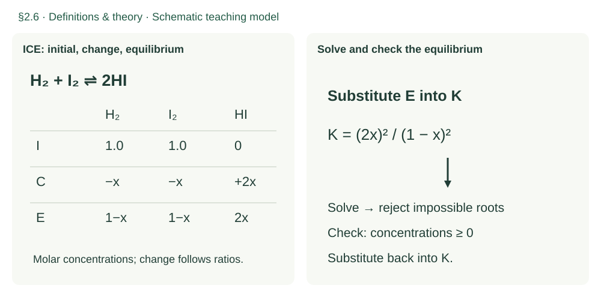
Equations & relationships
A ⇌ B: [A]eq = [A]₀ − x; [B]eq = [B]₀ + x
K = ([B]₀ + x)/([A]₀ − x)
Approximation check: 100|νx|/C ≤ 5% for each neglected change
Derivation & reasoning
- If x M of A converts to B at fixed volume, conservation requires A to decrease by x and B to increase by x.
- Substitute those concentrations into K. This turns the equilibrium condition into an equation for x.
- For an initially product-free 1:1 system, K = x/(C − x), so KC − Kx = x and x = KC/(1 + K).
- For more complicated stoichiometry, keep the coefficients in both the change row and the powers in K. Solve the resulting algebra and check 0 ≤ x ≤ the limiting allowed change.
Worked check
Initially [A] = 0.50 M, [B] = 0 and K = 4.0 for A ⇌ B. Then x = 4.0 × 0.50/5.0 = 0.40 M. Thus [A]eq = 0.10 M and [B]eq = 0.40 M; the ratio is 4.0.
Assumptions & common mistakesDo not subtract x from every reactant regardless of coefficient. For A + 2B ⇌ C, changes are −x, −2x, and +x. A 5% check applies to every term simplified, not just one.
Practice toolkit · §2.6
Use these methods alongside the definitions, diagrams and worked check above. This section connects all 17 review questions and their prebuilt solutions to the skills below. Question links open the matching problem in the practice page.
Prepare an ICE table in the final volume
Convert starting moles or stock solutions into concentrations after mixing, before reaction. Set changes in balanced coefficient ratios and use I + C = E. Joined gas flasks use their total accessible volume; equal-volume solution mixing halves each separate stock concentration before reaction.
cinitial = ninitial/Vfinal; E = I + C
Solve from K and retain the physical root
Use conservation for isomers, a common extent variable for reaction, and square or cube roots when they simplify positive concentration ratios. Numerical or trial solutions must stay inside bounds that keep every species nonnegative. Back-substitute into K and check mass balance.
For H₂ + I₂ ⇌ 2HI with equal initial reactants C: K = (2x)²/(C − x)²
Reset the initial row after a disturbance
Compute K from the old equilibrium if needed, then apply the imposed addition, removal or dilution to form a new I row. Only after that should the new chemical change x be applied. Graphs show direct jumps at the disturbance and continuous relaxation changes in coefficient ratios.
New I = immediately disturbed composition; new E = new I + reaction change
Work backwards to the starting or added amount
Use measured equilibrium products and coefficient ratios to recover how much reactant was consumed, then add it back to what remains. For a desired new equilibrium, solve K for the required final concentration and include both the amount remaining and the amount consumed in the adjustment.
Required addition = final amount − old amount − net amount generated by reaction
Test the excess-solid assumption
A heterogeneous-equilibrium calculation may require more solid than was supplied. Compute the amount consumed by the candidate equilibrium and compare with the initial mass. If a phase is exhausted first, the phase-constrained K equation is no longer the correct final-state condition. Q9 deliberately exposes this conflict for the stated BN mass.
Required solid mass = stoichiometric moles consumed × molar mass
Apply in practice:Q9
Further explain
Why is there only one unknown change in an ICE table?
For one independent reaction, all species changes are tied to the same reaction extent. An ICE table is conservation bookkeeping expressed in concentration units.
- For A + B ⇌ C at fixed volume, let x = Δξ/V. If the initial concentrations are A₀, B₀ and C₀, the equilibrium values are A₀ − x, B₀ − x and C₀ + x.
- Insert these values into Kc = [C]/([A][B]), giving Kc(A₀ − x)(B₀ − x) = C₀ + x.
- Solve the resulting equation, then reject roots that make any concentration negative. A forward shift requires 0 ≤ x ≤ min(A₀,B₀); a reverse shift permits negative x down to −C₀.
- Substitute the accepted concentrations back into Q. Agreement with K checks equilibrium; the linked concentration changes check stoichiometry.
Kc = (C₀ + x)/[(A₀ − x)(B₀ − x)]
Make it concrete. With A₀ = B₀ = 0.100 M, C₀ = 0 and Kc = 10.0 M⁻¹, the equation gives x ≈ 0.0382 M or 0.2618 M. Only 0.0382 M leaves nonnegative reactants.
When this applies. Use post-mixing initial concentrations and a constant volume during equilibration. For 2A ⇌ B the changes are −2x and +x. Multiple independent equilibria may need multiple unknowns.
Physical chemistry connection. §7.1, extent of reaction · printed pp. 201 · PDF pp. 233 ↗ · §7.2, stoichiometry and equilibrium composition · printed pp. 203–207 · PDF pp. 235–239 ↗
03
Solubility Equilibrium
Identify ions, quantify solubility, and predict precipitation after mixing.
Textbook pp. 143–188 · 4 sections
3.1The Concept of Solubility
p. 144
Textbook pp. 144–153 · PDF pages 154–163
Definitions
- Solubility
- The amount of a substance that can dissolve in a specified amount of solvent or solution at stated conditions.
- Saturated solution
- A solution at the equilibrium solubility limit; with excess solid present, dissolution and crystallization balance.
- Electrolyte
- A substance that produces mobile ions in solution and allows the solution to conduct electricity.
Concepts
Dissolving an ionic solid separates its ions and surrounds them with water molecules. It does not destroy the ions. A soluble ionic compound is written as separated aqueous ions in a complete ionic equation; a precipitate, weak electrolyte, or pure liquid is left intact. Cancel identical spectator ions to obtain a net ionic equation. Use Table A3 to predict which compounds are soluble.
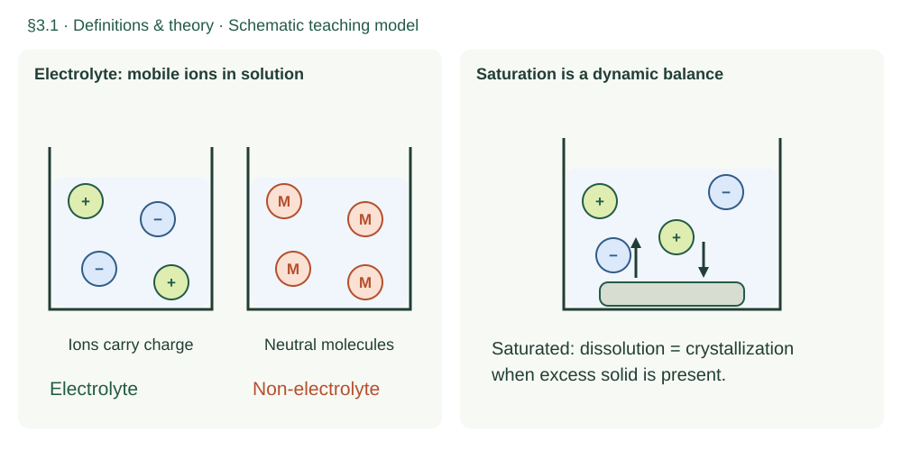
Equations & relationships
Molar solubility s = ndissolved / Vsolution
Mass solubility (g L⁻¹) = s × molar mass (g mol⁻¹)
Ag⁺(aq) + Cl⁻(aq) → AgCl(s)
Derivation & reasoning
- Start with a formula equation: AgNO₃(aq) + NaCl(aq) → AgCl(s) + NaNO₃(aq).
- Separate the soluble strong electrolytes into ions, retaining their coefficients and charges.
- Na⁺ and NO₃⁻ occur unchanged on both sides, so cancel them. The remaining ions and solid give the net ionic equation.
- For a solubility conversion, multiply mol L⁻¹ by g mol⁻¹. The mole units cancel and leave g L⁻¹.
Worked check
If a salt of molar mass 100.0 g mol⁻¹ has molar solubility 2.0 × 10⁻³ mol L⁻¹, its mass solubility is 0.20 g L⁻¹. The amount of each dissolved ion then follows from the salt’s formula.
Assumptions & common mistakesSoluble does not mean infinitely soluble. Strong electrolyte describes dissociation of the amount that dissolves; it does not itself specify how much dissolves.
Practice toolkit · §3.1
Use these methods alongside the definitions, diagrams and worked check above. This section connects all 9 review questions and their prebuilt solutions to the skills below. Question links open the matching problem in the practice page.
Connect ion production and conductivity
Strong electrolytes such as soluble salts, strong acids and strong bases provide mobile ions essentially completely; weak acids ionize partly. Dissolved sugars and ethanol are non-electrolytes. Compare actual ion concentrations and mobilities, not just solubility or the number of hydrogens in a formula.
Dissociation separates existing ions; ionization of a molecular acid creates ions through reaction with water.
Write ionic formulas and dissociation equations
Use charges to construct a neutral formula, keep polyatomic ions intact, and balance atoms and charge when separating it into aqueous ions. Use a reversible dissolution equation for saturation in contact with solid. A hydrate releases its waters of crystallization as neutral water.
Ba(OH)₂·8H₂O(s) → Ba²⁺(aq) + 2OH⁻(aq) + 8H₂O(l)
Convert solubility, mass and ion concentration
Convert mass to formula-unit moles, divide by final solution volume, then multiply by each ion coefficient. Reverse the route to find the mass needed for a target ion concentration. Distinguish g/L, molar solubility and the concentration of an individual ion.
s = mass solubility/molar mass; [ion] = ion coefficient × dissolved formula-unit concentration
Add every source of a common ion when mixing
Count ion moles contributed by each solution before dividing by total volume. Chloride from NaCl and MgCl₂ must both be included. Check electrical neutrality with charge-weighted concentrations, not simply equal total cation and anion molarities.
[Cl⁻] = (n(NaCl) + 2n(MgCl₂))/Vtotal; Σpositive charge concentrations = Σnegative charge magnitudes
Apply in practice:Q7
Prepare a saturated solution correctly
At fixed temperature, add excess solid, stir and allow equilibrium until some remains undissolved. Filter or decant the clear liquid at that temperature. Measure the required final solution volume; one litre of starting water is not necessarily one litre of solution. Low solubility still permits finite dissolved ions.
Saturation is the maximum equilibrium dissolved concentration at the specified conditions.
Further explain
Why does a saturated solution stop gaining dissolved solute?
Dissolution can be favourable at first because ions are stabilized by solvent interactions and by mixing. As dissolved activities rise, the driving tendency changes until dissolution and crystallization balance.
- For MX(s) ⇌ M⁺(aq) + X⁻(aq), write ΔᵣG = ΔᵣG° + RT ln(aM⁺aX⁻). The pure solid’s activity is 1.
- At low dissolved activities, the logarithmic term favours dissolution. As both ion activities rise, this term becomes larger.
- At saturation with solid present, ΔᵣG = 0 and aM⁺aX⁻ = Ksp. More solid does not change this equilibrium relation while the same solid phase remains present.
- In dilute pure water with no other source of ions, a 1:1 salt gives [M⁺] = [X⁻] = s. Then the school concentration expression gives Ksp ≈ s² numerically when concentrations are entered in M.
MX(s) ⇌ M⁺ + X⁻; Ksp = aM⁺aX⁻ ≈ ([M⁺]/c°)([X⁻]/c°)
Make it concrete. For a model 1:1 salt with Ksp = 1.0 × 10⁻¹⁰, s ≈ 1.0 × 10⁻⁵ M in pure water. Adding solid after saturation increases the undissolved amount.
When this applies. This applies the PDF’s activity framework to solubility. Solubility is an equilibrium amount; dissolution rate is a speed. Ion pairing, complex formation and nonideal activities can change the calculation.
Physical chemistry connection. §§5.7 and 5.9, solute and ionic activities · printed pp. 161–164 · PDF pp. 193–196 ↗ · §7.2, heterogeneous equilibrium framework · printed pp. 204–206 · PDF pp. 236–238 ↗
3.2Qualitative Analysis — Identifying Unknown Ions
p. 154
Textbook pp. 154–166 · PDF pages 164–176
Definitions
- Qualitative analysis
- Identifying which species are present, rather than measuring their amounts.
- Selective precipitation
- Removing one ion as a precipitate under conditions that leave another ion dissolved.
- Confirmatory test
- An additional characteristic reaction used to support an ion identification.
Concepts
Choose reagents by comparing possible products with the solubility table. Add a reagent to a separate sample or follow a planned separation sequence. Filter a precipitate before testing the filtrate further. A precipitate shows that some compatible ion is present; when several ions could give that result, a second selective test is required. Record observations separately from inferences.
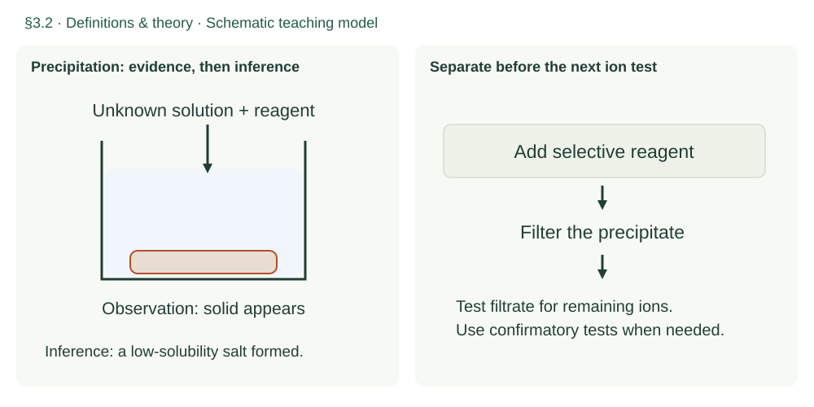
Equations & relationships
Ba²⁺(aq) + SO₄²⁻(aq) → BaSO₄(s)
Ag⁺(aq) + Cl⁻(aq) → AgCl(s)
Charge check: sum of reactant charges = sum of product charges
Derivation & reasoning
- List the candidate ions and all precipitates each possible reagent might form, using Table A3.
- Select a reagent that separates candidates. For example, if the only candidates are Ba²⁺ and Na⁺, sulfate can precipitate BaSO₄ while sodium remains dissolved.
- Write the net ionic equation and check atom and charge conservation. For BaSO₄, +2 + (−2) = 0, matching the neutral solid.
- Test or separate additional portions to resolve competing explanations. The reasoning derives from solubility rules and conservation, rather than a universal identification equation.
Worked check
For a sample known to contain either NaCl or Na₂SO₄, adding Ba(NO₃)₂ gives BaSO₄(s) only for the sulfate candidate under suitable concentrations. The conclusion depends on the stated candidate list.
Assumptions & common mistakesA single white precipitate rarely identifies an unrestricted unknown. Reagent contamination, inadequate concentrations, or an unremoved earlier reagent can give misleading results.
Practice toolkit · §3.2
Use these methods alongside the definitions, diagrams and worked check above. This section connects all 13 review questions and their prebuilt solutions to the skills below. Question links open the matching problem in the practice page.
Use the solubility table and its exceptions
Group 1, ammonium and nitrate salts are generally soluble under the table rules; consult the listed exceptions for other ions. Low solubility is not zero solubility. Convert g/L to mol/L before using the book’s approximately 0.10 M classification boundary. Soluble nitrate reagents deliver test cations without a competing precipitating anion.
Molar solubility = (g solute per litre)/(g per mole)
Write formula, complete ionic and net ionic equations
Predict products and states; split aqueous strong electrolytes, retain solids, pure liquids and weak electrolytes, then cancel identical spectator ions. Some mixtures form two solids and have no spectators. Check both atoms and total charge; a table prediction presumes concentrations sufficient for precipitation.
Ag⁺(aq) + Cl⁻(aq) → AgCl(s); Na⁺ and NO₃⁻ cancel for AgNO₃/NaCl mixing.
Plan selective precipitation and filtration
Choose a reagent that removes one candidate while leaving the others dissolved, then filter before adding the next reagent. A controlled pH can separate hydroxides; indiscriminate excess base can precipitate several ions or redissolve an amphoteric hydroxide. Group 1 ions are difficult to separate with the simple precipitation table.
Selectivity needs separated precipitation thresholds under the actual concentrations.
Redissolve a solid through a linked equilibrium
Acid can remove a basic anion; a ligand can bind the metal cation. Either lowers a free-ion concentration and promotes dissolution. Examples are acid dissolving carbonate, selective acid dissolution of some sulfides, and NH₃ dissolving AgCl by silver-complex formation more readily than AgI under suitable conditions.
Ag₂CO₃(s) + 2H⁺ → 2Ag⁺ + CO₂ + H₂O; Ag⁺ + 2NH₃ ⇌ Ag(NH₃)₂⁺
Explain hard water, scale and softening
Hard water contains appreciable Ca²⁺ and Mg²⁺. Scale is deposited low-solubility mineral such as CaCO₃. Acid removes existing carbonate deposits; added carbonate can precipitate dissolved hardness ions before they form scale or insoluble soap salts. Treat the resulting solid as a separate phase to remove.
CaCO₃(s) + 2H⁺ → Ca²⁺ + CO₂(g) + H₂O(l)
Apply in practice:Q13
Further explain
How does selective precipitation identify an ion?
A reagent is selective only if its concentration makes one possible salt supersaturated while another remains below its precipitation threshold. “Insoluble” is a useful table label, but the actual concentrations matter.
- Suppose the possible cations M⁺ and N⁺ both form 1:1 salts with X⁻. For MX, precipitation becomes thermodynamically favourable when [M⁺][X⁻] > Ksp,MX in the school concentration convention.
- The threshold is therefore [X⁻]crit,M = Ksp,MX/[M⁺]. Likewise [X⁻]crit,N = Ksp,NX/[N⁺]. Use concentrations after reagent dilution.
- If the M threshold is smaller, choose [X⁻] between the two thresholds to begin precipitating MX selectively. Recalculate as M is removed, because its threshold then rises.
- Filter before testing the remaining solution. A precipitate identifies M only when the candidate list and possible interfering precipitates support that inference.
Ksp,MX/[M⁺] < [X⁻] < Ksp,NX/[N⁺] (selective onset window)
Make it concrete. For hypothetical salts with both cations at 0.010 M and Ksp values 10⁻¹⁰ and 10⁻⁶, the thresholds are 10⁻⁸ and 10⁻⁴ M X⁻. At 10⁻⁶ M X⁻, only the first salt is initially supersaturated.
When this applies. This is an application of Q versus K, not a reagent recipe from the PDF. The window predicts precipitation onset, not automatically complete separation. Different stoichiometries require different powers.
Physical chemistry connection. §7.2, activities and reaction quotient · printed pp. 204–206 · PDF pp. 236–238 ↗
3.3The Solubility Product Constant Ksp
p. 167
Textbook pp. 167–176 · PDF pages 177–186
Definitions
- Solubility product, Ksp
- The equilibrium product of dissolved-ion concentration factors for dissolution of a sparingly soluble ionic solid.
- Molar solubility, s
- Moles of formula units dissolved per litre of saturated solution.
- Common ion
- An ion supplied by more than one dissolved source in the same equilibrium system.
Concepts
Write a balanced dissolution equation before constructing Ksp. The solid is omitted, and ion coefficients become exponents. Relate each ion concentration to s through its coefficient. A common ion contributes an initial concentration and usually lowers solubility. Ksp and s are different quantities; comparing Ksp values alone can mis-rank solubilities when salt stoichiometries differ.
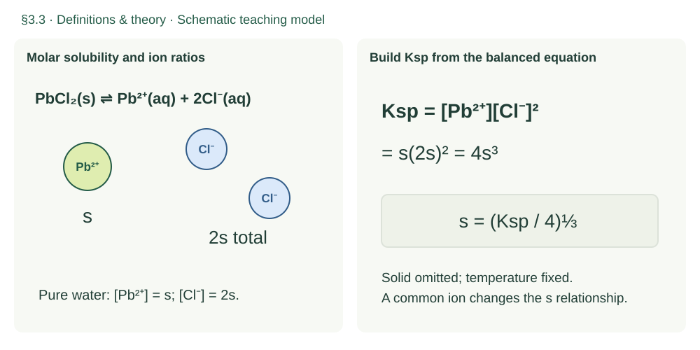
Equations & relationships
MₐXᵦ(s) ⇌ aM(aq) + bX(aq): Ksp = [M]ᵃ[X]ᵇ
In initially ion-free water: [M] = as; [X] = bs
Ksp = aᵃbᵇs^(a+b); for MX₂: Ksp = 4s³
MX₂ with initial [X] = C: Ksp = s(C + 2s)²
Derivation & reasoning
- Dissolving s mol L⁻¹ of formula units creates as mol L⁻¹ of M ions and bs mol L⁻¹ of X ions.
- Insert those concentrations into Ksp: (as)ᵃ(bs)ᵇ = aᵃbᵇs^(a+b). Ion charges are left out of the generic labels here; the actual dissolution equation must balance charge.
- For MX₂, one M and two X ions form, so Ksp = s(2s)² = 4s³. Therefore s = (Ksp/4)^(1/3).
- If X is already present at concentration C, add its contribution: [X]eq = C + 2s. If 2s is negligible relative to C, Ksp ≈ sC²; verify that approximation.
Worked check
For a hypothetical MX₂ with Ksp = 4.0 × 10⁻¹², s = (10⁻¹²)^(1/3) = 1.0 × 10⁻⁴ M in pure water. Then [M] = 1.0 × 10⁻⁴ M and [X] = 2.0 × 10⁻⁴ M.
Assumptions & common mistakesThese solubility relations assume no significant hydrolysis, complex formation, or other side reaction. Use free-ion concentrations, not the total analytical amount of an ion bound in other species.
Practice toolkit · §3.3
Use these methods alongside the definitions, diagrams and worked check above. This section connects all 10 review questions and their prebuilt solutions to the skills below. Question links open the matching problem in the practice page.
Derive Ksp from the exact dissolution stoichiometry
Omit the pure solid; each dissolved-ion coefficient becomes an exponent. If MₐXᵦ is the only source in pure water, [M] = as and [X] = bs. Coefficients are not extra factors in Ksp until concentrations have been expressed through s.
Ksp = (as)ᵃ(bs)ᵇ; MX: s²; MX₂ or M₂X: 4s³; M₃X: 27s⁴; M₃X₂: 108s⁵
Convert residue, hydrate mass and saturated volume
An evaporated residue gives the dissolved formula-unit amount. Convert using the correct weighed compound’s molar mass and the original solution volume to get s, then Ksp. Include hydrate water in a hydrate’s molar mass, although water is omitted from the solubility-product expression. Reverse this route to find the mass dissolved in a specified volume.
m(dissolved) = sVsolution M(weighed compound)
Compare solubilities rather than bare constants
A higher Ksp ranks molar solubility directly only for comparable stoichiometry and conditions. Solve each salt’s s relation before comparing salts with different ion ratios. Polymorphs with the same formula can be compared through their Ksp values using the same relationship. A common ion changes s while temperature-fixed Ksp remains constant.
For CdCO₃: s = √Ksp. For Cd(OH)₂: s = (Ksp/4)^(1/3).
Explain a precipitation-titration indicator
A chloride titration with Ag⁺ forms AgCl first when its silver threshold is lower than the chromate threshold. As chloride is depleted, free Ag⁺ rises enough for red Ag₂CrO₄ to appear. Compare threshold concentrations using both stoichiometry and indicator concentration, not just the two Ksp numbers.
AgCl: [Ag⁺]crit = Ksp/[Cl⁻]. Ag₂CrO₄: [Ag⁺]crit = √(Ksp/[CrO₄²⁻]).
Apply in practice:Q9
Further explain
Why is Ksp sometimes s² and sometimes 4s³?
The equilibrium expression uses free-ion concentrations. Molar solubility s counts dissolved formula units. Stoichiometry connects these quantities; they are not interchangeable.
- For MₚXq(s) ⇌ pM + qX, dissolving s mol L⁻¹ in initially ion-free water gives [M] = ps and [X] = qs, provided no other reactions remove these ions.
- Write Ksp = aMᵖaXᑫ. With dilute activities, substitute aM ≈ ps/c° and aX ≈ qs/c°.
- Collect factors: Ksp ≈ pᵖqᑫ(s/c°)^(p+q). Therefore s ≈ c°[Ksp/(pᵖqᑫ)]^(1/(p+q)).
- For CaF₂ ⇌ Ca²⁺ + 2F⁻, p = 1 and q = 2. This gives Ksp ≈ (s/c°)(2s/c°)² = 4(s/c°)³.
CaF₂: Ksp ≈ 4(s/c°)³ → s ≈ c°(Ksp/4)^(1/3)
Make it concrete. For a model CaF₂ value Ksp = 4.0 × 10⁻¹¹, s ≈ 2.15 × 10⁻⁴ M and [F⁻] ≈ 4.31 × 10⁻⁴ M. Substituting both ions returns the stated Ksp.
When this applies. This applies the general activity expression in the PDF. The school shorthand Ksp = 4s³ uses numerical concentrations in M. Common ions, acid reactions or complexes invalidate the simple ps and qs substitutions.
Physical chemistry connection. §7.2, stoichiometric powers and solid activity · printed pp. 204–206 · PDF pp. 236–238 ↗
3.4Precipitation Formation and the Solubility Product Ksp
p. 177
Textbook pp. 177–188 · PDF pages 187–198
Definitions
- Trial ion product, TIP or Qsp
- The Ksp expression evaluated from current ion concentrations before a proposed precipitation change.
- Precipitation threshold
- The condition Qsp = Ksp, at the onset of saturation.
- Dilution on mixing
- The reduction in an ion’s concentration when its amount occupies the combined solution volume.
Concepts
Before predicting a precipitate, calculate ion concentrations after mixing but before precipitation. Qsp > Ksp means precipitation is favoured; Qsp < Ksp means an unsaturated solution; Qsp = Ksp is the equilibrium threshold. The threshold also lets you calculate which ion precipitates first during a selective separation. The final amount of solid requires an additional stoichiometric and equilibrium calculation.
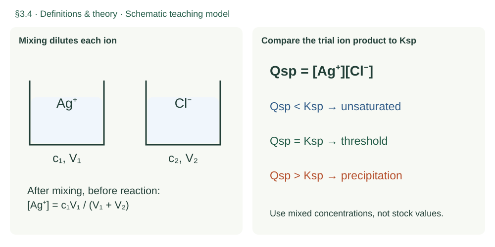
Equations & relationships
[ion]mixed = nion / Vtotal = cstock Vstock × ion coefficient / Vtotal
Qsp > Ksp: precipitation favoured; Qsp < Ksp: unsaturated
For MX(s) ⇌ M⁺ + X⁻: [X⁻]threshold = Ksp/[M⁺]
Derivation & reasoning
- Calculate moles of each relevant ion from each stock solution. Account for coefficients such as two chloride ions per CaCl₂ formula unit.
- Add the solution volumes when volume additivity is assumed. Divide each ion amount by that total volume.
- Insert the mixed concentrations into the ion product. Compare with Ksp for the same temperature.
- At the onset of MX precipitation, set [M⁺][X⁻] = Ksp and rearrange for the required added ion. Compare threshold values to predict the first precipitate.
Worked check
Mix equal volumes of 1.0 × 10⁻⁴ M AgNO₃ and 1.0 × 10⁻⁴ M NaCl. Each ion is diluted to 5.0 × 10⁻⁵ M. Qsp = 2.5 × 10⁻⁹, exceeding Ksp(AgCl) ≈ 1.8 × 10⁻¹⁰ at 25 °C, so precipitation is favoured.
Assumptions & common mistakesQsp predicts the initial tendency, not the final precipitate mass. After a precipitate forms, the remaining free ions must satisfy Ksp if equilibrium with the solid is reached.
Explore / 03
The precipitation test
Mix equal 50.0 mL volumes of AgNO₃ and NaCl. Change their starting concentrations to test for AgCl precipitation.
Assume additive volumes and ideal dilute solutions. Each concentration halves on mixing. Compare Qsp = [Ag⁺][Cl⁻] with Ksp = 1.8 × 10⁻¹⁰ at 25 °C. The tool predicts onset, not the final amount precipitated.
Practice toolkit · §3.4
Use these methods alongside the definitions, diagrams and worked check above. This section connects all 14 review questions and their prebuilt solutions to the skills below. Question links open the matching problem in the practice page.
Identify the precipitate and use mixed concentrations
Write the dissolution equation for the candidate solid and its Ksp expression. Calculate each free-ion concentration after mixing, before precipitation; include all sources and correct ion coefficients. Equality of initial ion amounts persists through precipitation only if their consumption ratio supports it and side reactions are neglected.
Qsp = product of mixed free-ion concentrations^dissolution coefficients; Qsp > Ksp favours precipitation
Calculate onset, maximum concentration and visibility
Set Qsp = Ksp to find the saturation threshold for an unknown ion. Convert that concentration into mass using the total mixed volume and the source salt’s molar mass when asked. The mathematical onset need not be a visibly detectable precipitate, and extremely large calculated thresholds can exceed the model’s physical validity.
For PbSO₄: [Pb²⁺]crit = Ksp/[SO₄²⁻]. For Ag₂CO₃: [CO₃²⁻]crit = Ksp/[Ag⁺]².
Find a selective window and the fraction remaining
Calculate the added-ion concentration at which each candidate first saturates. The smaller threshold precipitates first. Keep the added ion between the thresholds for selective removal; at the second onset, use the first salt’s Ksp to find its residual ion concentration. Account for dilution before interpreting the fraction removed.
% removed = 100(1 − nremaining/ninitial); at unchanged volume, nremaining/ninitial = cremaining/cinitial
Apply in practice:Q9
Separate a removal dose from equilibrium residue
For a carbonate softening dose, convert hardness-ion mass to moles and use the precipitation stoichiometry. Include all waters of crystallization in washing soda’s molar mass. The stoichiometric minimum does not imply exactly zero residual ions; practical near-complete removal can need excess reagent.
Mg²⁺ + CO₃²⁻ → MgCO₃(s); M(Na₂CO₃·10H₂O) ≈ 286.14 g mol⁻¹
Apply in practice:Q10
Treat common ions and acid dissolution differently
Adding a common ion generally suppresses solubility without changing Ksp at fixed temperature. Consuming an ion through a side reaction can increase solubility: acid removes OH⁻ from Fe(OH)₃ dissolution, for example. For a 1:1 salt with a large initial common-ion concentration c₀, s ≈ Ksp/c₀; check s ≪ c₀.
BaSO₄: Ksp = s(c₀ + s) ≈ sc₀. Fe(OH)₃ + 3H⁺ → Fe³⁺ + 3H₂O.
Further explain
Why must dilution be calculated before comparing Qsp and Ksp?
The ions first occupy the combined volume. Precipitation then responds to their new activities. Using stock concentrations skips that immediate physical change and can predict a precipitate that should not form.
- Before any reaction, use conservation of amount: [ion]mix = cstockVstock/Vtotal, assuming additive volumes.
- For AgCl(s) ⇌ Ag⁺ + Cl⁻, compute Qsp = aAg⁺aCl⁻. With dilute solutions, use the corresponding normalized concentrations.
- For dissolution, ΔᵣGdiss = RT ln(Qsp/Ksp). If Qsp > Ksp, dissolution has a positive Gibbs-energy slope; the reverse process, precipitation, is favoured.
- If precipitation reaches equilibrium with solid present, remove equal amounts of Ag⁺ and Cl⁻: ([Ag⁺]mix − x)([Cl⁻]mix − x) = Ksp in the school convention.
ΔᵣGprecip = −RT ln(Qsp/Ksp)
Make it concrete. Mix equal volumes of 1.0 × 10⁻⁵ M AgNO₃ and NaCl. Each ion becomes 5.0 × 10⁻⁶ M, so Qsp ≈ 2.5 × 10⁻¹¹, below Ksp = 1.8 × 10⁻¹⁰. No AgCl precipitation is predicted.
When this applies. The sign test is thermodynamic. Supersaturation can persist while nuclei form slowly. Below saturation, existing solid can dissolve; if none is present, no dissolution is possible.
Physical chemistry connection. §7.2, quotient and equilibrium criterion · printed pp. 204–206 · PDF pp. 236–238 ↗
04
Acid-Base Equilibrium
Follow proton transfer, define acidity, and calculate weak-acid and weak-base equilibria.
Textbook pp. 189–254 · 5 sections
4.1Identifying Acids and Bases
p. 190
Textbook pp. 190–198 · PDF pages 200–208
Definitions
- Arrhenius acid / base
- In water, an acid increases hydronium concentration and a base increases hydroxide concentration.
- Brønsted–Lowry acid / base
- An acid donates a proton; a base accepts a proton.
- Conjugate pair / amphiprotic species
- A conjugate acid–base pair differs by one H⁺; an amphiprotic species can donate or accept H⁺.
Concepts
Track the actual proton transfer. The donor becomes its conjugate base, while the acceptor becomes its conjugate acid. Water can accept a proton from an acid or donate one to a base. Hydronium, H₃O⁺, represents protonated water; H⁺ is common shorthand in aqueous equations. A species’ role depends on its reaction partner.
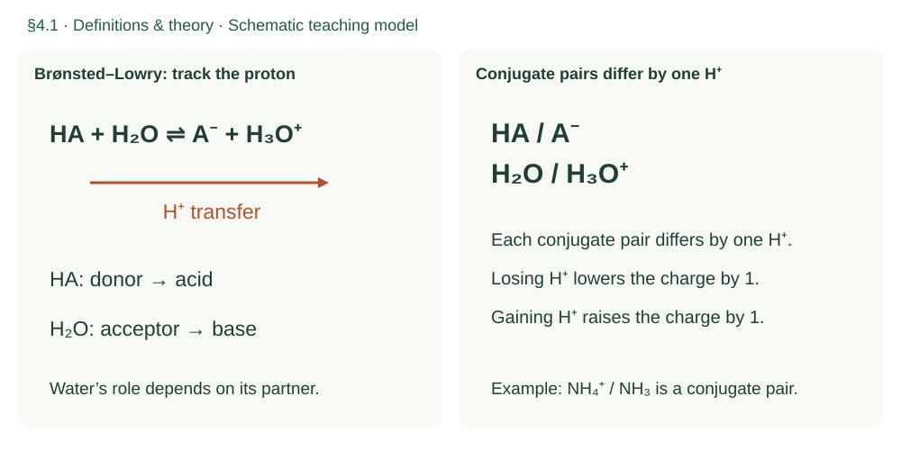
Equations & relationships
HA + B ⇌ A⁻ + BH⁺
HA + H₂O ⇌ A⁻ + H₃O⁺
NH₃ + H₂O ⇌ NH₄⁺ + OH⁻
Derivation & reasoning
- Remove one H⁺ from the proposed acid. Its hydrogen count decreases by one and its charge decreases by +1, yielding the conjugate base.
- Add that same H⁺ to the proposed base. Its hydrogen count increases by one and its charge increases by +1, yielding the conjugate acid.
- For HA with water, the pairs are HA/A⁻ and H₃O⁺/H₂O. For ammonia with water, they are NH₄⁺/NH₃ and H₂O/OH⁻.
- Confirm that atoms and net charge balance. This constructs the proton-transfer equation from the definitions.
Worked check
In HCO₃⁻ + H₂O ⇌ CO₃²⁻ + H₃O⁺, bicarbonate donates H⁺ and acts as an acid. In HCO₃⁻ + H₂O ⇌ H₂CO₃ + OH⁻, it accepts H⁺ and acts as a base.
Assumptions & common mistakesConjugate partners differ by exactly one proton. CO₃²⁻ is not the immediate conjugate base of H₂CO₃; HCO₃⁻ is.
Practice toolkit · §4.1
Use these methods alongside the definitions, diagrams and worked check above. This section connects all 12 review questions and their prebuilt solutions to the skills below. Question links open the matching problem in the practice page.
Compare Arrhenius and Brønsted–Lowry models
Arrhenius focuses on H₃O⁺ or OH⁻ production in water. Brønsted–Lowry tracks proton donation and acceptance and includes bases without an OH group, such as ammonia and pyridine, as well as proton transfer outside water. H⁺ from ordinary hydrogen is a proton; in aqueous equations it is solvated and commonly written H₃O⁺.
Acid: H⁺ donor. Base: H⁺ acceptor. HA + H₂O ⇌ A⁻ + H₃O⁺.
Draw water and hydronium Lewis structures
Water has two O–H bonds and two oxygen lone pairs. One lone pair can bond to a proton, giving hydronium with three O–H bonds, one lone pair and total charge +1. Count electrons and check the oxygen octet instead of adding an electron with H⁺.
H₂O: 2 bonding pairs + 2 lone pairs around O. H₃O⁺: 3 bonding pairs + 1 lone pair.
Apply in practice:Q3
Assign roles in both directions and write conjugates
Follow the actual proton. Its donor becomes the conjugate base; its acceptor becomes the conjugate acid. On reversal, the roles reverse. Construct a conjugate by adding or removing exactly one H⁺ and changing charge by one. Preserve the rest of the formula and verify total atoms and charge.
Conjugate acid: add H, charge +1. Conjugate base: remove H, charge −1.
Show both reactions of an amphiprotic species
Write one reaction in which the species donates a proton to water and another in which it accepts one. Examples include water, bicarbonate and hydrogen phosphates. A pH measurement shows the dominant role under the stated conditions; acid reacting with bicarbonate can form carbonic acid that releases CO₂.
HCO₃⁻ + H₂O ⇌ CO₃²⁻ + H₃O⁺; HCO₃⁻ + H₂O ⇌ H₂CO₃ + OH⁻
Infer acid strength from an equilibrium direction
A proton-transfer equilibrium favours the weaker acid–base pair. If the written reaction is left-favoured, the acid on the right is stronger than its partner on the left. Compare the two acids themselves rather than inferring strength from the sign of their charge.
For HA + B ⇌ A⁻ + HB⁺: K = Ka(HA)/Ka(HB⁺), in the compatible activity model
Apply in practice:Q7
Further explain
Why does an acid–base reaction depend on both partners?
An acid donates a proton to a base. Whether transfer is strongly favoured depends on the relative strengths of the two acids on opposite sides, not on an acid label alone.
- Write HA + H₂O ⇌ H₃O⁺ + A⁻ with constant Ka(HA).
- Write BH⁺ + H₂O ⇌ H₃O⁺ + B with constant Ka(BH⁺), then reverse it. Reversal changes its constant to 1/Ka(BH⁺).
- Add the first equation to the reversed second equation. H₂O and H₃O⁺ cancel, leaving HA + B ⇌ A⁻ + BH⁺.
- Adding reaction Gibbs energies multiplies their equilibrium constants, so Ktransfer = Ka(HA)/Ka(BH⁺) = 10^[pKa(BH⁺) − pKa(HA)].
Ktransfer = Ka(HA)/Ka(BH⁺)
Make it concrete. If pKa(HA) = 4 and pKa(BH⁺) = 9, Ktransfer = 10⁵. Proton transfer favours the side containing the weaker acid BH⁺ and weaker base A⁻.
When this applies. This is an acid–base application of the PDF’s rules for combining equilibria. Constants must use the same solvent, temperature and activity conventions. A conjugate pair differs by one proton.
Physical chemistry connection. §7.2, reaction Gibbs energy and equilibrium constants · printed pp. 204–206 · PDF pp. 236–238 ↗
4.2The Strengths of Acids and Bases
p. 199
Textbook pp. 199–211 · PDF pages 209–221
Definitions
- Strong / weak acid
- A strong acid reacts essentially completely with water under usual dilute aqueous conditions; a weak acid establishes a partial-ionization equilibrium.
- Acid strength versus concentration
- Strength describes ionization tendency; concentration describes the amount initially dissolved per volume.
- Ka / Kb
- Equilibrium constants for proton donation to water / proton acceptance from water.
Concepts
For comparable conditions, a larger Ka indicates a stronger acid and a smaller pKa. A stronger acid has a weaker conjugate base. Use Table A5 to compare proton donors and acceptors, then predict transfer toward the weaker acid–base pair. A low-solubility hydroxide can be strongly dissociated in the fraction that dissolves; solubility and base strength answer different questions.
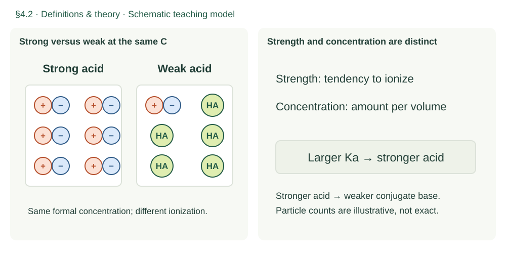
Equations & relationships
Ka(HA) = [H₃O⁺][A⁻]/[HA]
Kb(B) = [BH⁺][OH⁻]/[B]
HA + B ⇌ A⁻ + BH⁺: K = Ka(HA)/Ka(BH⁺)
Derivation & reasoning
- Write HA + H₂O ⇌ A⁻ + H₃O⁺ and its Ka expression.
- Write BH⁺ + H₂O ⇌ B + H₃O⁺, then reverse it to consume the hydronium made by HA. Reversing takes the reciprocal of its Ka.
- Add the equations and cancel water and hydronium. The net reaction is HA + B ⇌ A⁻ + BH⁺.
- Multiplying the equilibrium expressions cancels [H₃O⁺] and gives K = Ka(HA)/Ka(BH⁺). A ratio above one favours proton transfer to B.
Worked check
A 0.0010 M HCl solution is a dilute strong acid; 0.10 M acetic acid is a more concentrated weak acid. The words strong and concentrated cannot replace one another.
Assumptions & common mistakesUse the relevant stepwise Ka for a polyprotic acid. Do not assume every acidic hydrogen ionizes completely or that an acid’s formula directly gives its equilibrium [H₃O⁺].
Practice toolkit · §4.2
Use these methods alongside the definitions, diagrams and worked check above. This section connects all 12 review questions and their prebuilt solutions to the skills below. Question links open the matching problem in the practice page.
Separate ionization strength, concentration and conductivity
Strong and weak describe extent of ionization or reaction with water, not formal concentration. At comparable concentrations, a strong acid usually supplies more mobile ions than a weak acid; a polyprotic formula does not imply complete release of every proton. Total ion concentration is a sum of actual ion molarities, not ionic strength.
2.0 M HNO₃ gives approximately 2.0 M H₃O⁺ + 2.0 M NO₃⁻ = 4.0 M total ions in the classroom model.
Write Ka and Kb for the reacting form
For an acid, remove one proton and form hydronium; for a base, add one proton and form hydroxide. Omit liquid water from the expression. For hydrated metal ions, a coordinated water loses the proton. Use the textbook’s stated boric-acid convention when matching its table, while recognizing that precise aqueous boron chemistry is different.
Ka = [conjugate base][H₃O⁺]/[acid]; Kb = [conjugate acid][OH⁻]/[base]
Rank bases through their conjugate acids
Identify the correct one-proton conjugate acid first. A weaker conjugate acid has a stronger base, so acid-strength order reverses when ranking the corresponding bases. Amphiprotic ions can appear in two adjacent acid–base pairs; choose the pair for the process actually being considered.
Kb(base) = Kw/Ka(its conjugate acid)
Calculate and interpret a proton-transfer constant
Write the proton transfer with charge balance. Divide the Ka of the acid on the left by the Ka of the acid on the right. K > 1 favours the weaker acid–base pair on the right; K < 1 favours the left. Several observed directions can be combined into a consistent relative-strength ranking.
For HA + B⁻ ⇌ A⁻ + HB: K = Ka(HA)/Ka(HB)
Explain the levelling effect of water
HCl, HBr and HI transfer protons essentially completely to water, so equal dilute formal concentrations give essentially the same hydronium concentration. Water levels their observable aqueous acidity to H₃O⁺. This does not establish identical intrinsic strength in another solvent or in the gas phase.
HX + H₂O → H₃O⁺ + X⁻, for these strong acids in water
Apply in practice:Q12
Further explain
Why must a strong acid have a weak conjugate base?
The acid and its conjugate base are two directions of a linked proton-transfer system. If HA gives up its proton readily in water, A⁻ has little tendency to take one back from water.
- Write HA + H₂O ⇌ H₃O⁺ + A⁻ and A⁻ + H₂O ⇌ HA + OH⁻.
- Add them and cancel HA and A⁻. The net reaction is 2H₂O ⇌ H₃O⁺ + OH⁻, the ionization of water.
- Multiply the two activity expressions. The HA and A⁻ factors cancel, leaving the expression for Kw. Thus KaKb = Kw.
- Apply −log₁₀ to both sides: pKa + pKb = pKw. At 25 °C in the usual aqueous convention, pKw ≈ 14.00.
KaKb = Kw; pKa + pKb = pKw
Make it concrete. For Ka = 1.8 × 10⁻⁵, the conjugate base has Kb ≈ (1.0 × 10⁻¹⁴)/(1.8 × 10⁻⁵) = 5.6 × 10⁻¹⁰ at 25 °C.
When this applies. This derives a conjugate-pair relation using the PDF’s equilibrium framework. Strong versus weak describes equilibrium tendency; concentrated versus dilute describes amount per volume.
Physical chemistry connection. §7.2, multiplying equilibria · printed pp. 204–206 · PDF pp. 236–238 ↗ · §§5.7 and 5.9, activities · printed pp. 161–163 · PDF pp. 193–195 ↗
4.3The Ionization of Water
p. 212
Textbook pp. 212–218 · PDF pages 222–228
Definitions
- Autoionization of water
- Proton transfer between two water molecules, producing hydronium and hydroxide.
- Ion-product constant, Kw
- The equilibrium product of hydronium and hydroxide concentration factors in the dilute aqueous convention.
- Neutral solution
- An aqueous solution with equal hydronium and hydroxide concentrations.
Concepts
Both H₃O⁺ and OH⁻ are present in aqueous solutions. Added acid raises one and suppresses the other; added base does the reverse. Neutrality means equality, not the absence of ions. Kw depends on temperature; 1.0 × 10⁻¹⁴ is the familiar value at 25 °C.
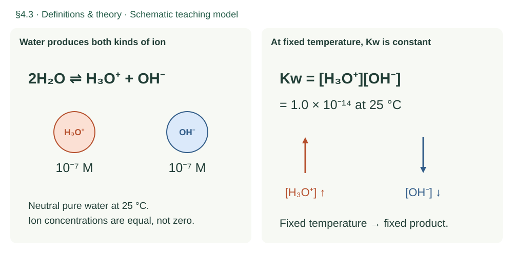
Equations & relationships
2H₂O(l) ⇌ H₃O⁺(aq) + OH⁻(aq)
Kw = [H₃O⁺][OH⁻] = 1.0 × 10⁻¹⁴ at 25 °C
Neutral water: [H₃O⁺] = [OH⁻] = √Kw
For a conjugate pair: KaKb = Kw
Derivation & reasoning
- Apply the equilibrium-expression rule to water autoionization. Pure liquid water is omitted, leaving the ion product Kw.
- In pure water, the ions form in equal amounts. Setting each concentration to x gives x² = Kw, hence x = √Kw = 1.0 × 10⁻⁷ M at 25 °C.
- For HA, write Ka = [H₃O⁺][A⁻]/[HA]. For its conjugate base, Kb = [HA][OH⁻]/[A⁻].
- Multiply: [HA] and [A⁻] cancel, leaving KaKb = [H₃O⁺][OH⁻] = Kw. Both constants must refer to the same conjugate pair and temperature.
Worked check
If [H₃O⁺] = 2.0 × 10⁻³ M at 25 °C, then [OH⁻] = 1.0 × 10⁻¹⁴/(2.0 × 10⁻³) = 5.0 × 10⁻¹² M. The solution is acidic because hydronium exceeds hydroxide.
Assumptions & common mistakesNeutral pH is 7.00 only when pKw = 14.00. Very dilute added acid or base may require water’s contribution instead of assuming [H₃O⁺] or [OH⁻] equals the added concentration.
Practice toolkit · §4.3
Use these methods alongside the definitions, diagrams and worked check above. This section connects all 10 review questions and their prebuilt solutions to the skills below. Question links open the matching problem in the practice page.
Generalize autoionization and use the correct temperature
Autoionization transfers a proton between two solvent molecules. For pure water or heavy water, the conjugate ion concentrations are equal; in an added acid or base they need not be. Use the supplied temperature-specific Kw, and recognize endothermic water ionization: heating increases both neutral-water ion concentrations while preserving neutrality.
2NH₃ ⇌ NH₄⁺ + NH₂⁻; 2D₂O ⇌ D₃O⁺ + OD⁻; neutral water: [H₃O⁺] = [OH⁻] = √Kw
Combine solubility equilibrium with water equilibrium
For a saturated hydroxide, use Ksp and ion coefficients to obtain [OH⁻] first, then use Kw for hydronium. Do not assume all of an arbitrary mass of a low-solubility hydroxide dissolves or equate its molar solubility directly with hydroxide concentration.
Ca(OH)₂: Ksp = s(2s)² = 4s³; [OH⁻] = 2s; [H₃O⁺] = Kw/[OH⁻]
Apply in practice:Q8
Neutralize mixed strong acids and bases in moles
Convert each solution to acid or base equivalents, add all sources, and subtract consumed equivalents before dividing by total final volume. Do not average the initial ion concentrations. If cylinder volumes come from a diagram, report sensible precision rather than treating approximate readings as exact.
Excess acid equivalents = Σn(H⁺ supplied) − Σn(OH⁻ supplied); [excess] = nexcess/Vtotal
Apply in practice:Q9
Find a mass needed for a target excess
The reagent must first neutralize the original acid, then provide the specified leftover hydroxide. Convert the total hydroxide requirement to formula-unit moles using the hydroxide coefficient and then to mass. State any negligible-volume-change and hydrate assumptions.
n(Sr(OH)₂) = [n(initial H⁺) + [OH⁻]target Vfinal]/2
Apply in practice:Q10
Further explain
Why does neutrality depend on temperature?
Neutrality means equal hydronium and hydroxide activities. Their common value is set by water’s equilibrium constant, which changes with temperature like any other equilibrium constant.
- Start with Kw ≈ aH₃O⁺aOH⁻ when liquid-water activity is approximately 1.
- At neutrality, let both activities equal a. Then Kw = a², so a = √Kw.
- Take −log₁₀: pHneutral = −log₁₀(√Kw) = ½pKw. The familiar value 7.00 follows only when pKw = 14.00.
- The van ’t Hoff relation gives d ln Kw/dT = ΔᵣH°/(RT²). Because water ionization is endothermic around room temperature, warming increases Kw and lowers the neutral pH.
pHneutral = ½pKw(T)
Make it concrete. If the supplied Kw at a temperature is 4.0 × 10⁻¹⁴, the neutral activity is 2.0 × 10⁻⁷ and neutral pH ≈ 6.70. Equal acid and base activities still mean neutral.
When this applies. This applies the PDF’s temperature-dependence equation to water ionization. In dilute classroom calculations, activities are approximated by concentrations divided by 1 M.
Physical chemistry connection. §5.7(c), activity and pH · printed pp. 161 · PDF pp. 193 ↗ · §7.4, temperature dependence · printed pp. 212–214 · PDF pp. 244–246 ↗
4.4pH and pOH
p. 219
Textbook pp. 219–233 · PDF pages 229–243
Definitions
- pH / pOH
- Negative base-10 logarithms of hydronium / hydroxide activity; the school dilute-solution model substitutes numerical molar concentrations.
- pKw
- The negative base-10 logarithm of Kw.
- Logarithmic scale
- A scale in which one unit corresponds to a multiplicative factor of ten.
Concepts
The logarithm compresses the large concentration range encountered in acid–base chemistry. Lower pH means greater hydronium activity. Use base-10 logarithms and keep enough digits until the final answer. The usual 0–14 classroom scale is not an absolute limit. The interactive model below uses the dilute-solution approximation at 25 °C.
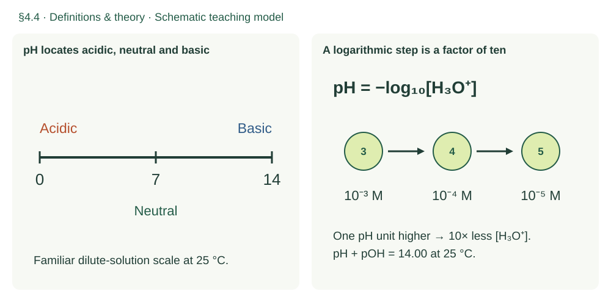
Equations & relationships
pH ≈ −log₁₀([H₃O⁺]/c°); pOH ≈ −log₁₀([OH⁻]/c°)
[H₃O⁺] ≈ c° × 10^(−pH); c° = 1 mol L⁻¹
pH + pOH = pKw = 14.00 at 25 °C
[H₃O⁺]₁/[H₃O⁺]₂ ≈ 10^(pH₂ − pH₁)
Derivation & reasoning
- In the concentration convention, begin with Kw = [H₃O⁺][OH⁻], with standard-concentration factors implicit.
- Take −log₁₀ of both sides. The logarithm of a product is the sum of the logarithms, yielding pKw = pH + pOH.
- From pH = −log₁₀([H₃O⁺]/c°), reverse the logarithm with a power of ten to obtain [H₃O⁺] ≈ c°10^(−pH).
- For two solutions, divide their powers of ten. Subtracting exponents gives the concentration ratio.
Worked check
At 25 °C, pH = 3.40 gives [H₃O⁺] ≈ 10⁻³·⁴⁰ = 4.0 × 10⁻⁴ M, pOH = 10.60, and [OH⁻] ≈ 2.5 × 10⁻¹¹ M. A pH 3 solution has 100 times the hydronium of a pH 5 solution.
Assumptions & common mistakesDo not average pH values when mixing solutions. React the acid and base amounts first, find the remaining concentration, and only then take the logarithm.
Explore / 04
One pH step. Ten times the difference.
Slide through pH values to see the corresponding ion concentrations at 25 °C.
Ideal concentration model with pKw = 14.00. Colours are illustrative, not a prediction for a particular indicator. Real concentrated solutions require activity corrections.
Practice toolkit · §4.4
Use these methods alongside the definitions, diagrams and worked check above. This section connects all 17 review questions and their prebuilt solutions to the skills below. Question links open the matching problem in the practice page.
Move between concentration, pH, pOH and Kw
Use base-10 logarithms and powers consistently. At the stated temperature pH + pOH = pKw, and neutral pH is pKw/2. Lower pH means more hydronium; lower pOH means more hydroxide. With a supplied Kw, use its temperature rather than automatically substituting 14.
[H₃O⁺] ≈ 10^(−pH) M; [OH⁻] ≈ 10^(−pOH) M; pKw = −log₁₀Kw
Report logarithmic precision correctly
The decimal places in pH or pOH correspond to the significant figures in the underlying concentration. Keep guard digits in intermediate calculations and round only at the end. The integer part of pH locates the order of magnitude; it is not counted as a concentration significant figure.
3.50 × 10⁻⁶ M → pH 5.456; pH 2.50 → [H₃O⁺] ≈ 3.2 × 10⁻³ M
Include formula coefficients and mass or gas conversions
For a dissolved strong hydroxide, multiply its formula concentration by the number of OH⁻ ions supplied. For a strong monoprotic acid, formal concentration approximates hydronium when water’s contribution is negligible. Use n = m/M, n = cV and the appropriate formula before taking a logarithm.
Sr(OH)₂: [OH⁻] ≈ 2c. For strong HI: m(HI) ≈ 10^(−pH) V M(HI).
Mix acid and base through equivalents, never mean pH
Convert each pH or pOH to concentration, then to moles; include all acid and base sources. Neutralize and divide the remaining equivalents by total volume. Convert the surviving acid or base concentration back to pH. If the excess is extremely small, include water equilibrium rather than treating the excess alone as the free-ion concentration.
For a clear strong-base excess: pH = pKw + log₁₀(nexcess OH⁻/Vtotal), with concentration in M
Work backwards from a target pH to reagent mass
Determine whether the target remains acidic or basic, calculate the desired leftover equivalents, and subtract from the initial equivalents to find what must be neutralized. Multiply reagent moles by the correct molar mass. Check that the proposed dose does not cross equivalence unexpectedly.
n(neutralizing reagent equivalents) = initial excess equivalents − target remaining equivalents
Further explain
Why does a pH unit mean a factor of ten?
pH compresses a very wide range of hydronium activities into a manageable scale. A logarithm turns multiplication into addition, so equal pH intervals represent equal concentration ratios.
- The thermodynamic definition is pH = −log₁₀ aH₃O⁺. Undo the logarithm to get aH₃O⁺ = 10^(−pH).
- For two solutions, pH₂ − pH₁ = −log₁₀(a₂/a₁), so a₂/a₁ = 10^[−(pH₂ − pH₁)].
- From Kw = aH₃O⁺aOH⁻, take −log₁₀: pKw = pH + pOH. The number 14.00 enters only through the room-temperature value of Kw.
- For a dilute solution aH₃O⁺ ≈ [H₃O⁺]/c°. Multiplying the numerical activity by c° = 1 M returns the concentration.
a₂/a₁ = 10^(pH₁ − pH₂); pH + pOH = pKw
Make it concrete. A pH 3 solution has about 100 times the hydronium concentration of a pH 5 solution in the dilute approximation. A change from pH 3 to 2.5 gives a factor 10^0.5 ≈ 3.16.
When this applies. log means base 10 here; ln in thermodynamic equations means base e. Activities are dimensionless. Concentrated solutions need activity corrections, and pH need not stay between 0 and 14.
Physical chemistry connection. §§5.7 and 5.9, activity definition and pH · printed pp. 161–163 · PDF pp. 193–195 ↗
4.5Calculations Involving Ka and Kb
p. 234
Textbook pp. 234–254 · PDF pages 244–264
Definitions
- Formal concentration, C
- The amount of acid or base introduced per litre before accounting for its equilibrium redistribution.
- Percent ionization
- The fraction of the original acid molecules that ionize, expressed as a percentage.
- Weak-acid/base ICE model
- A conservation table coupled to Ka or Kb to determine equilibrium concentrations.
Concepts
For a weak monoprotic acid alone in water, let x be the hydronium formed. The same x of conjugate base forms and C − x of acid remains. A weak base gives an analogous hydroxide equation. For a base calculation, convert pOH to pH at the stated temperature. The square-root approximation needs a small ionized fraction and negligible contribution from water.
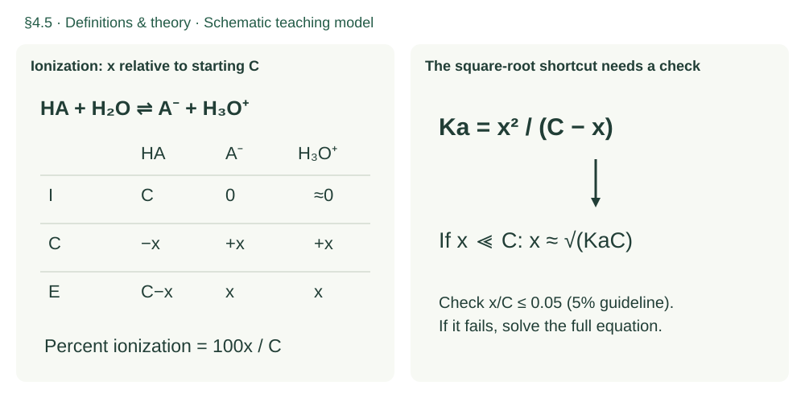
Equations & relationships
HA + H₂O ⇌ H₃O⁺ + A⁻: Ka = x²/(C − x)
x² + Ka x − Ka C = 0
x = (√(Ka² + 4KaC) − Ka)/2
If x ≪ C: [H₃O⁺] ≈ √(KaC); for B: [OH⁻] ≈ √(KbC)
Percent ionization = 100x/C
Derivation & reasoning
- Use the ICE concentrations C − x, x, and x. Insert them into Ka to give Ka = x²/(C − x).
- Multiply by C − x and collect terms to get the quadratic. The positive root gives the physically allowed x.
- If x is small relative to C, replace C − x by C, so x² ≈ KaC and x ≈ √(KaC).
- Check 100x/C ≤ 5% for this course shortcut. If it fails, solve the quadratic. If water, a common ion, or another ionization matters, construct the fuller equilibrium model.
- For a weak base, repeat with Kb and OH⁻, then calculate pOH = −log₁₀[OH⁻] and pH = pKw − pOH.
Worked check
For 0.10 M HA with Ka = 1.8 × 10⁻⁵, x ≈ √(1.8 × 10⁻⁶) = 1.34 × 10⁻³ M. The change is 1.34%, so the approximation passes. pH ≈ 2.87.
Assumptions & common mistakesThe quadratic is exact only within this single-equilibrium model. Neither it nor the square-root formula automatically accounts for water autoionization, multiple acidic protons, or nonideal solutions.
Practice toolkit · §4.5
Use these methods alongside the definitions, diagrams and worked check above. This section connects all 15 review questions and their prebuilt solutions to the skills below. Question links open the matching problem in the practice page.
Set up a weak-acid or weak-base model
Convert mass or gas volume to formal concentration first. For a weak monoprotic acid alone, hydronium and conjugate base each increase by x, leaving C − x acid; a weak base similarly produces x hydroxide. For polyprotic acids, dominance of the first ionization must be justified by separated constants and suppression of later stages.
K = x²/(C − x); x = (√(K² + 4KC) − K)/2, where K is the appropriate Ka or Kb
Use percent ionization to recover pH and Ka
Percent ionization measures the fraction of original acid units ionized. Turn the percentage into a fraction before multiplying by C. Use the resulting x in the full equilibrium expression to recover Ka and compare with the table for identification. A weak acid does not necessarily have a negligible percentage at every concentration.
x = C(% ionization/100); Ka = x²/(C − x); pH = −log₁₀x
Recover concentration, mass or gas volume from pH
A target pH gives x = [H₃O⁺] for an acid; a target pOH gives x = [OH⁻] for a base. Rearrange the full expression to recover the original formal concentration, including the ionized x term. Then convert C to the requested mass or gas volume; distinguish anhydrous and hydrated solids.
C = x + x²/K; n = CVsolution; mass = nM; Vgas at the exercise’s STP = n × 22.4 L mol⁻¹
Infer Ka or Kb from a measured solution
Convert the measured pH or pOH into the ion produced by the relevant equilibrium, not automatically hydronium for a base. Under the single-solute model the conjugate species also has concentration x and the original weak species has C − x. Compare x/C with the approximation criterion.
Ka(acid) = x²/(C − x), x = [H₃O⁺]; Kb(base) = x²/(C − x), x = [OH⁻]
Match the correct conjugate pair and constant
Adjacent protonation states differ by exactly one H⁺. Use the Ka for that particular acid to find the Kb of its paired conjugate base; an amphiprotic ion’s own Ka is a different process from its base reaction. Convert to pKa or pKb only after choosing the correct pair.
Ka(HA)Kb(A⁻) = Kw; pKa(HA) + pKb(A⁻) = pKw
Check when the shortcut and water neglect fail
The square-root approximation x ≈ √(KC) requires small depletion, commonly checked with x/C ≤ 5%. It also assumes negligible water contribution, no substantial initial conjugate ion, and a suitable single equilibrium. If those conditions fail, use the full equation or the necessary coupled equilibria.
Check: nonnegative concentrations, small-depletion assumption, appropriate medium and back-substitution into K.
Further explain
Where does the square-root weak-acid formula come from?
A weak acid produces hydronium and conjugate base together. The square root appears because the same reaction change x contributes to both factors in the numerator of Ka.
- For a monoprotic acid of initial concentration C, assume no initial conjugate base and negligible water contribution. Then [H₃O⁺] = [A⁻] = x and [HA] = C − x.
- Using the school numerical concentration convention, Ka = x²/(C − x). Multiply through and collect terms: x² + Ka x − Ka C = 0.
- The positive quadratic root is x = [−Ka + √(Ka² + 4KaC)]/2. The other root is negative and cannot represent the ionization amount.
- If x is small compared with C, replace C − x by C. Then x² ≈ KaC and x ≈ √(KaC). Check x/C afterward; the usual 5% rule tests this approximation.
x = [−Ka + √(Ka² + 4KaC)]/2 ≈ √(KaC)
Make it concrete. For C = 0.100 M and Ka = 1.8 × 10⁻⁵, x ≈ 1.34 × 10⁻³ M, only 1.34% of C, giving pH ≈ 2.87. The small-change approximation is consistent.
When this applies. This applies activity-based equilibrium to a dilute weak acid. For the displayed numerical formula, enter C and x as molar concentration values. Extremely dilute acids require water ionization; polyprotic acids need additional equilibria.
Physical chemistry connection. §§7.1–7.2, reaction extent and equilibrium expressions · printed pp. 201–206 · PDF pp. 233–238 ↗
05
Applications of Acid-Base Reactions
Use acid–base equilibria to explain salts, buffers, titrations, and oxides in water.
Textbook pp. 255–350 · 5 sections
5.1Hydrolysis of Salts — The Reactions of Ions with Water
p. 256
Textbook pp. 256–271 · PDF pages 266–281
Definitions
- Salt hydrolysis
- An acid–base reaction of a dissolved ion with water that produces hydronium or hydroxide.
- Spectator ion
- An ion whose acid–base reaction with water is negligible in the problem’s model.
- Amphiprotic ion
- An ion able to act as either a proton donor or a proton acceptor.
Concepts
Dissociate the salt and assess its ions separately. The conjugate base of a weak acid can make a solution basic, while the conjugate acid of a weak base can make it acidic. Alkali-metal cations and conjugate bases of strong acids are usually spectators in this course. Some small highly charged hydrated metal ions are acidic. If both ions react, compare their acid and base constants rather than guessing from the word salt.
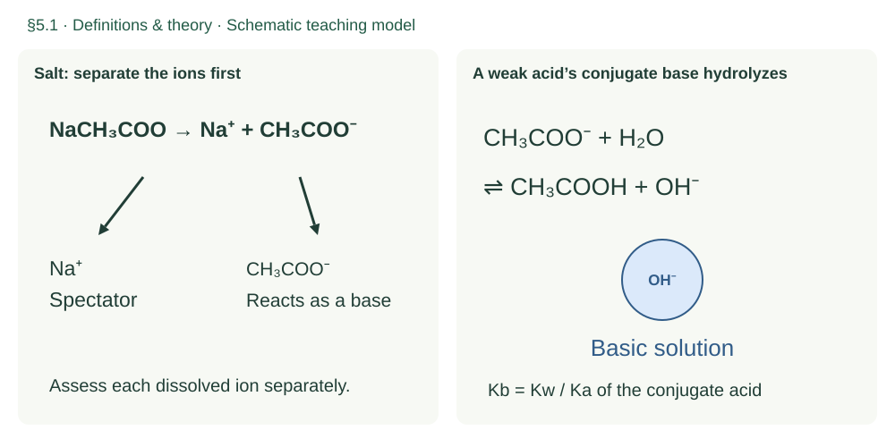
Equations & relationships
A⁻ + H₂O ⇌ HA + OH⁻; Kb(A⁻) = Kw/Ka(HA)
BH⁺ + H₂O ⇌ B + H₃O⁺; Ka(BH⁺) = Kw/Kb(B)
For one weakly hydrolyzing ion at concentration C: x ≈ √(KC)
Derivation & reasoning
- Identify the parent weak acid or weak base of the ion. Write the hydrolysis reaction explicitly.
- Use KaKb = Kw to obtain the ion’s hydrolysis constant from its conjugate partner’s constant.
- If the reacting ion starts at C with negligible initial product, its ICE concentrations give K = x²/(C − x).
- When x ≪ C, use x ≈ √(KC), verify the approximation, and calculate pH from the hydronium or hydroxide produced.
Worked check
For 0.10 M sodium acetate, Na⁺ is a spectator and acetate accepts a proton from water. With Ka(acetic acid) = 1.8 × 10⁻⁵, Kb = 5.6 × 10⁻¹⁰ and [OH⁻] ≈ 7.5 × 10⁻⁶ M. At 25 °C, pH ≈ 8.87.
Assumptions & common mistakesA neutralization reaction need not leave a neutral solution. For amphiprotic ions such as HCO₃⁻, consider both proton donation and acceptance; one square-root calculation alone may be insufficient.
Practice toolkit · §5.1
Use these methods alongside the definitions, diagrams and worked check above. This section connects all 10 review questions and their prebuilt solutions to the skills below. Question links open the matching problem in the practice page.
Classify every ion of a salt
Dissociate the formula, identify spectators and assess each reactive ion. A weak acid’s conjugate base produces OH⁻; a weak base’s conjugate acid produces H₃O⁺. Hydrated small highly charged metal ions can be acidic. For amphiprotic ions or two reactive salt ions, compare the appropriate constants and account for stoichiometric concentrations.
A⁻ + H₂O ⇌ HA + OH⁻; BH⁺ + H₂O ⇌ B + H₃O⁺
Calculate a salt solution’s pH
Determine the concentration of the hydrolyzing ion, including formula coefficients, total volume and any preceding neutralization. Select Ka or Kb for that ion, solve its equilibrium and convert to pH. A neutralization can leave an acidic or basic salt even when the starting acid and base equivalents were equal.
Acetate: Kb = Kw/Ka(CH₃COOH). Hydrazinium: Ka = Kw/Kb(N₂H₄).
Work backwards to the required salt mass
From target pH obtain the ion x produced by hydrolysis; recover the original reactive-ion concentration with C = x + x²/K. Convert to salt moles and use the correct hydrate molar mass. The full expression matters when hydrolysis consumes a substantial fraction, as in the dilute NaCN calculation.
m(salt) = CV M(salt)/(reactive-ion coefficient)
Rank equal-concentration salts and explain evaporation
First separate acidic, approximately neutral and basic salts, then compare the constants of their active ions. At equal relevant concentrations, stronger acidic hydrolysis lowers pH and stronger basic hydrolysis raises it. Evaporation of a weak-base salt can raise [OH⁻] while reducing the fraction hydrolyzed, until other effects become important.
Weak-base approximation: [OH⁻] ≈ √(KbC); fractional hydrolysis ≈ √(Kb/C)
Represent hydrated metal acidity correctly
The proton released by Al³⁺, Fe³⁺ or Cu²⁺ aquo ions comes from a coordinated water molecule. The positive metal ion polarizes its O–H bonds; it does not donate a proton from the metal nucleus. Use the Ka provided for the specified hydrated ion and keep atoms and charge balanced.
[M(H₂O)ₙ]ᶻ⁺ + H₂O ⇌ [M(H₂O)ₙ₋₁OH]⁽ᶻ⁻¹⁾⁺ + H₃O⁺
Further explain
How does dissolving a salt change pH?
Dissolving releases ions; some then transfer protons to or from water. Salt dissociation and hydrolysis are separate steps. The ion’s conjugate acid–base relationship determines whether it changes pH.
- For sodium acetate, dissolution gives Na⁺ and CH₃COO⁻. In the classroom model Na⁺ is a spectator, while acetate accepts a proton: CH₃COO⁻ + H₂O ⇌ CH₃COOH + OH⁻.
- Use the conjugate-pair relation Kb = Kw/Ka(CH₃COOH). If the initial acetate concentration is C and hydrolysis produces x M OH⁻, Kb = x²/(C − x) in the school convention.
- When x ≪ C, [OH⁻] ≈ √(KbC). Calculate pOH, then use pH = pKw − pOH.
- For an ammonium salt, the corresponding acidic process is NH₄⁺ + H₂O ⇌ NH₃ + H₃O⁺, with Ka(NH₄⁺) = Kw/Kb(NH₃).
Conjugate-base salt: [OH⁻] ≈ √[(Kw/Ka)C]
Make it concrete. At 25 °C, 0.100 M acetate with Ka = 1.8 × 10⁻⁵ gives Kb ≈ 5.6 × 10⁻¹⁰, [OH⁻] ≈ 7.5 × 10⁻⁶ M and pH ≈ 8.87.
When this applies. This is an application of the PDF’s equilibrium framework. When both ions react or an ion is amphiprotic, include the competing equilibria. Not every metal cation is a spectator.
Physical chemistry connection. §7.2, combining equilibrium expressions · printed pp. 204–206 · PDF pp. 236–238 ↗
5.2The Chemistry of Buffers
p. 272
Textbook pp. 272–289 · PDF pages 282–299
Definitions
- Buffer
- A solution that resists pH changes when relatively small amounts of strong acid or base are added.
- Conjugate buffer pair
- A weak acid and its conjugate base, both present in appreciable amounts.
- Buffer capacity
- The amount of added acid or base a buffer can absorb before its pH changes substantially.
Concepts
The conjugate base consumes added acid, while the weak acid consumes added base. Do the neutralization stoichiometry before applying the equilibrium relation. The acid/base ratio mainly determines pH; their total amounts determine how much added reagent the buffer can accommodate. Diluting both components by the same factor changes their ratio little, but lowers capacity and eventually makes other contributions important.
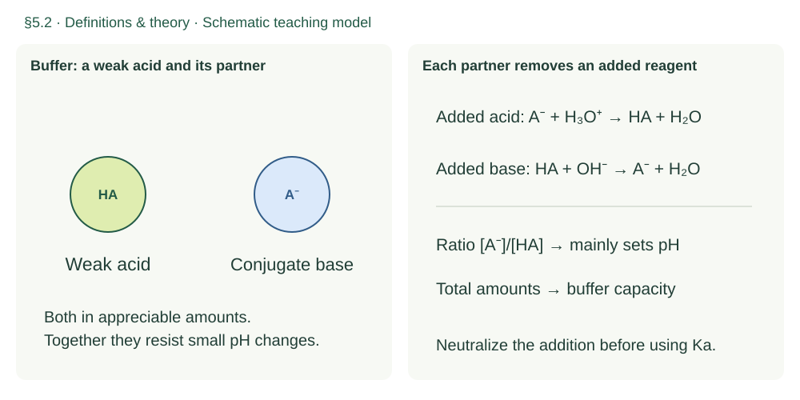
Equations & relationships
A⁻ + H₃O⁺ → HA + H₂O; HA + OH⁻ → A⁻ + H₂O
Ka = [H₃O⁺][A⁻]/[HA]
pH ≈ pKa + log₁₀([A⁻]/[HA])
After neutralization in one volume: [A⁻]/[HA] = n(A⁻)/n(HA)
Derivation & reasoning
- Rearrange the acid equilibrium expression to [H₃O⁺] = Ka[HA]/[A⁻].
- Take −log₁₀. The result is pH ≈ pKa + log₁₀([A⁻]/[HA]), the concentration form of the buffer relation.
- After an added strong acid or base reacts, update the amounts of both components. Their common final volume cancels from the ratio.
- Use those amounts only if both buffer components remain and their further equilibrium changes are small. A useful working range is roughly 0.1 ≤ [A⁻]/[HA] ≤ 10.
Worked check
A buffer starts with 0.100 mol HA and 0.100 mol A⁻, with pKa = 4.76. Adding 0.010 mol HCl leaves 0.110 mol HA and 0.090 mol A⁻. pH ≈ 4.76 + log₁₀(0.090/0.110) = 4.67.
Assumptions & common mistakesA strong acid–strong base mixture is not a buffer. If one component is exhausted, use excess strong reagent or the appropriate remaining-species equilibrium instead of the buffer equation.
Explore / 05
Adjust a buffer’s balance
For an illustrative HA/A⁻ buffer with pKa = 4.76, change the base-to-acid ratio.
Henderson–Hasselbalch approximation; assume both components remain appreciable and activity effects are small. The slider spans ratios 0.1 to 10. This ratio alone does not determine buffer capacity.
Practice toolkit · §5.2
Use these methods alongside the definitions, diagrams and worked check above. This section connects all 16 review questions and their prebuilt solutions to the skills below. Question links open the matching problem in the practice page.
Identify a usable conjugate buffer pair
Remove spectator ions and find a weak acid and its one-proton conjugate base, both present in appreciable amounts. A strong acid and its effectively nonbasic anion, such as HNO₃/NO₃⁻, do not provide a conventional buffer. Match the pair to the desired pH rather than assuming every conjugate pair is useful near neutral.
HA/A⁻ or BH⁺/B; both components must remain after any initial reaction.
Neutralize an addition before calculating pH
Added strong acid consumes the buffer base and increases its acid form; added strong base does the reverse. Update the moles first, then apply the equilibrium ratio if both components remain. If a component is exhausted, switch to the resulting excess-reagent or weak-species model instead of forcing the buffer equation.
pH ≈ pKa + log₁₀[n(A⁻)/n(HA)] after stoichiometry; same solution volume cancels in the ratio
Distinguish pH, range and capacity
Equal conjugate concentrations give pH ≈ pKa, regardless of their shared concentration within the buffer approximation. Capacity depends on the available amounts, with a more concentrated equal-volume pair tolerating more reagent. The conventional useful range pKa ± 1 corresponds to base:acid ratios about 0.1–10.
Ratio sets pH; total concentration sets capacity per unit volume; total moles set the reserve in the whole sample.
Make a buffer by partial neutralization or salt addition
Partly neutralize a weak acid with a strong base to leave both weak acid and conjugate base, or add a soluble conjugate salt to a weak-acid solution. Use the target ratio to calculate salt moles and mass. In Q14 the intended acid is HNO₂, not strong HNO₃; half-neutralization produces equal HNO₂ and NO₂⁻.
n(A⁻)/n(HA) ≈ 10^(target pH − pKa)
Follow the carbon dioxide and hemoglobin equilibria
Removing CO₂ from the carbonic-acid/bicarbonate system tends to consume H⁺ and raise pH. In the simplified Bohr-effect model, alkalosis increases hemoglobin’s oxygen affinity and can hinder tissue unloading; acidosis reduces affinity and favours unloading while making loading less favourable at the same oxygen pressure. These are linked-equilibrium tendencies.
CO₂ + H₂O ⇌ H₂CO₃ ⇌ H⁺ + HCO₃⁻; lower [H⁺] favours more tightly bound oxygen in this model.
Further explain
Why does a buffer obey Henderson–Hasselbalch?
A buffer contains an acid that consumes added base and its conjugate base that consumes added acid. The equilibrium ratio sets pH, while the available amounts determine how much disturbance it can absorb.
- Begin with Ka = aH₃O⁺aA⁻/aHA. Rearrange: aH₃O⁺ = Ka(aHA/aA⁻).
- Take −log₁₀ and use the quotient rule: pH = pKa + log₁₀(aA⁻/aHA). In dilute solutions this becomes pH ≈ pKa + log₁₀([A⁻]/[HA]).
- If strong acid is added, first use A⁻ + H₃O⁺ → HA + H₂O. Subtract the added acid moles from A⁻ and add them to HA.
- After that stoichiometric step, use the new ratio in the equilibrium relation. The common final volume cancels in [A⁻]/[HA] = n(A⁻)/n(HA).
pH ≈ pKa + log₁₀[n(A⁻)/n(HA)]
Make it concrete. Start with 0.100 mol of each component and add 0.010 mol strong acid. The ratio becomes 0.090/0.110; pH changes by log₁₀(0.818) ≈ −0.087.
When this applies. The logarithmic activity equation follows directly from Ka. Substituting post-neutralization amounts assumes both components remain and further equilibrium changes are small. This is a worked application of the PDF’s activity framework.
Physical chemistry connection. §§5.7 and 5.9, activities and pH · printed pp. 161–163 · PDF pp. 193–195 ↗ · §7.2, equilibrium framework · printed pp. 204–206 · PDF pp. 236–238 ↗
5.3Acid-Base Titrations — Analyzing with Volume
p. 290
Textbook pp. 290–306 · PDF pages 300–316
Definitions
- Titration
- Determining an amount by measuring the volume of a known-concentration reagent needed for a stoichiometric reaction.
- Titrant / analyte
- The measured reagent added from the burette / the sample being analyzed.
- Equivalence point / endpoint
- The stoichiometric completion point / the observed signal used to stop the titration.
Concepts
A suitable titration reaction has known stoichiometry, proceeds rapidly and essentially completely, and has a detectable completion signal. Read delivered volume as final minus initial burette reading. Use the balanced equation to connect moles, then calculate the unknown concentration. An indicator endpoint approximates the equivalence point; their difference can cause systematic error.
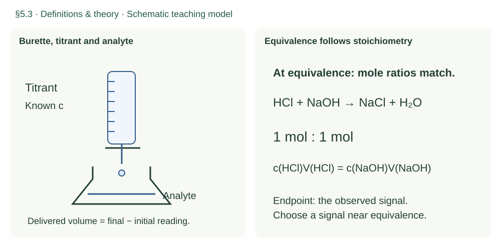
Equations & relationships
ndelivered = ctitrant(Vfinal − Vinitial)
For aA + bB → products at equivalence: nA/a = nB/b
cAVA/a = cBVB/b
For a monoprotic acid with a monohydroxide base: cAVA = cBVB
Derivation & reasoning
- Convert the delivered titrant volume to litres if concentration is in mol L⁻¹, and multiply by concentration to find moles.
- The balanced equation states that a mol A react with b mol B. Dividing each reacting amount by its coefficient gives equal reaction amounts at equivalence.
- Substitute n = cV for each species and isolate the unknown concentration.
- For a pure dilution, conservation gives c₁V₁ = c₂V₂ instead. Its similar appearance must not hide the different reason: dilution conserves one solute, whereas titration uses a reaction ratio.
Worked check
A 25.00 mL HCl sample requires 20.00 mL of 0.1000 M NaOH. The 1:1 reaction gives n(HCl) = 0.1000 × 0.02000 = 0.002000 mol, so c(HCl) = 0.002000/0.02500 = 0.08000 M.
Assumptions & common mistakesDo not use cAVA = cBVB for every acid/base formula. For H₂SO₄ + 2NaOH → Na₂SO₄ + 2H₂O at full neutralization, n(NaOH) = 2n(H₂SO₄).
Practice toolkit · §5.3
Use these methods alongside the definitions, diagrams and worked check above. This section connects all 14 review questions and their prebuilt solutions to the skills below. Question links open the matching problem in the practice page.
Use equivalents, not the initial free-ion concentration
A weak monoprotic acid and a strong monoprotic acid with equal formal moles require equal hydroxide equivalents at complete neutralization. Weak acid continually ionizes as OH⁻ removes H₃O⁺. Count all titratable protons and all OH⁻ per formula unit; the molecular mole ratio need not be 1:1.
At complete neutralization: acid equivalents = base equivalents.
Read burette delivery and plan enough titrant
Delivered volume is final minus initial reading; add deliveries if the burette is refilled. Estimate required titrant volume from expected analyte moles before starting. Pure water washing the flask walls changes concentration but not analyte moles if no sample is lost, so the equivalence volume is unchanged.
Vtitrant = required titrant moles/ctitrant
Standardize with the correct primary-standard formula
A carefully weighed mass is insufficient if reagent purity is uncertain: NaOH absorbs moisture and CO₂ and should be standardized. KHP provides one titratable proton; oxalic acid provides two. Include hydration water in a weighed oxalic-acid dihydrate molar mass.
c(NaOH) = n(KHP)/V(NaOH); n(NaOH) = 2n(H₂C₂O₄)
Recover an unknown molar mass with aliquot scaling
Use the titration to determine analyte moles in the aliquot, then multiply by Vstock/Valiquot for the full weighed sample. Divide sample mass by total analyte moles. Diprotic acid and a dihydroxide base can have a 1:1 molecular ratio because their two equivalent factors cancel.
Munknown = msample/[nanalyte in aliquot × (Vstock/Valiquot)]
Calculate percentage purity
Convert titrant volume and concentration to equivalents, use the reaction ratio for pure analyte, scale to the complete sample if only an aliquot was titrated, and multiply by analyte molar mass. Divide pure mass by impure sample mass. State the assumption that impurities do not also consume titrant.
% purity = 100 mpure analyte/msample
Join gas, pH and titration conversions
A strong-base pH can give the titrant hydroxide concentration; a measured STP gas volume can give the stock acid amount. Carry the result through stock concentration, aliquot moles, balanced equivalents and titrant volume, keeping gas volume distinct from final solution volume.
n(gas) = Vgas/Vm → cstock = n/Vsolution → naliquot = cstockValiquot → equivalence ratio
Further explain
Why does the equivalence-volume equation work?
Equivalence is a stoichiometric condition: the titrant added has exactly the amount required by the balanced neutralization equation. It does not, by itself, specify pH.
- For aA + bB → products, one reaction extent consumes aξ mol A and bξ mol B. At equivalence, nA/a = nB/b.
- Replace amount by concentration times volume. This gives cAVA/a = cBVB/b, provided each concentration refers to the corresponding reactant amount.
- For H₂SO₄ + 2NaOH → Na₂SO₄ + 2H₂O, complete two-proton neutralization gives n(NaOH) = 2n(H₂SO₄). The coefficient ratio cannot be dropped.
- A measured endpoint is the observed indicator or instrument signal. It estimates equivalence; its closeness depends on the chosen detection method.
cAVA/a = cBVB/b at equivalence
Make it concrete. 25.00 mL of 0.1000 M H₂SO₄ contains 0.002500 mol acid. Complete neutralization needs 0.005000 mol NaOH, or 50.00 mL of 0.1000 M NaOH.
When this applies. This applies the PDF’s reaction-extent bookkeeping to titration. Use litres for n = cV. For weak acids, calculate the equivalence-point pH from the conjugate species after the stoichiometric calculation.
Physical chemistry connection. §§7.1–7.2, extent and stoichiometric numbers · printed pp. 201–204 · PDF pp. 233–236 ↗
5.4A Closer Look at Titrations
p. 307
Textbook pp. 307–336 · PDF pages 317–346
Definitions
- Titration curve
- A graph of pH against the amount or volume of titrant added.
- Half-equivalence point
- For a monoprotic weak acid titrated with strong base, the point where half the initial acid has been neutralized.
- Acid–base indicator
- A weak acid or base whose conjugate forms have different colours.
Concepts
Choose the pH calculation by the species present. Initially use the original acid or base model. Before equivalence in a weak-acid/strong-base titration, use the remaining acid and formed conjugate base. At equivalence, use the salt’s hydrolysis. After equivalence, excess strong titrant usually controls pH. For strong acid with strong base, the equivalence solution is neutral; a weak-acid/strong-base equivalence is basic, and a weak-base/strong-acid equivalence is acidic.
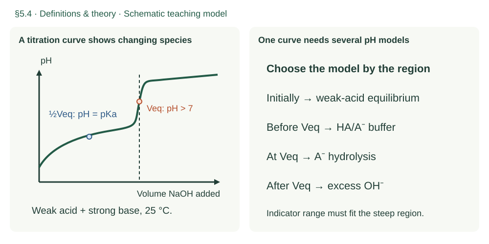
Equations & relationships
Before equivalence: pH ≈ pKa + log₁₀[n(A⁻)/n(HA)]
At half-equivalence: n(A⁻) = n(HA), so pH ≈ pKa
After excess strong base: [OH⁻] ≈ nexcess(OH⁻)/Vtotal
HIn + H₂O ⇌ H₃O⁺ + In⁻: pH ≈ pKa,In + log₁₀([In⁻]/[HIn])
Derivation & reasoning
- For an initial n₀ of HA and added n of OH⁻ before equivalence, neutralization leaves n₀ − n of HA and forms n of A⁻.
- At n = n₀/2 the two amounts are equal. Their ratio is one, log₁₀1 = 0, and the buffer relation gives pH ≈ pKa.
- At equivalence no appreciable original HA remains after stoichiometry, so use A⁻ hydrolysis with Kb = Kw/Ka and the diluted salt concentration.
- The indicator expression is the same acid equilibrium rearrangement. If its visible colour transition corresponds roughly to ratios 0.1–10, its transition range is approximately pKa,In ± 1. Choose an indicator whose range lies inside the curve’s steep region.
Worked check
For 25.0 mL of 0.100 M HA titrated with 0.100 M NaOH, equivalence occurs at 25.0 mL. At 12.5 mL, pH ≈ pKa. At equivalence, [A⁻] ≈ 0.00250 mol/0.0500 L = 0.0500 M, which is the concentration used for hydrolysis.
Assumptions & common mistakesEquivalence does not always mean pH 7, and endpoint does not mean exact equivalence. All concentrations after mixing must use total volume.
Practice toolkit · §5.4
Use these methods alongside the definitions, diagrams and worked check above. This section connects all 15 review questions and their prebuilt solutions to the skills below. Question links open the matching problem in the practice page.
Predict indicator form, ratio and mixed colour
An indicator is a weak acid with differently coloured conjugate forms. Use its Ka or approximate transition midpoint to predict which form dominates. Within the transition range report a mixture rather than an abrupt switch. A colour establishes a pH range, not a unique chemical identity; inconsistent printed results cannot justify an inconsistent pH model.
[In⁻]/[HIn] = Ka/[H₃O⁺] ≈ 10^(pH − pKa); transition midpoint gives approximate pKa
Identify solutions with several indicator ranges
Estimate each candidate’s pH from strong acid/base concentration or salt hydrolysis, then select indicators giving distinct result patterns. Include the given solution concentrations and the indicator table’s actual ranges. Q6’s printed acetic-acid/methyl-orange entry conflicts with the stated 0.10 M solution, so distinguish intended identification from a fully consistent data set.
Compare each candidate pH with every selected indicator’s lower and upper transition limits.
Choose an endpoint from the equivalence chemistry
Strong/strong equivalence is neutral at 25 °C. A weak-acid/strong-base salt is basic; a weak-base/strong-acid salt is acidic. Choose an indicator whose range lies in the steep part of that actual titration curve. An indicator useful for showing acidity is not automatically suitable for detecting equivalence.
Weaker acid → stronger conjugate base → higher equivalence pH, for comparable conditions.
Use half-equivalence to find Ka or Kb
Halfway through a weak-acid titration, equal HA and A⁻ give pH ≈ pKa. For a weak base titrated with strong acid, halfway pOH ≈ pKb, equivalently pH ≈ pKa of BH⁺. Use this midpoint to identify an unknown weak acid or recover its base constant.
Ka ≈ 10^(−pH at half-equivalence); Kb ≈ 10^(−pOH at half-equivalence)
Calculate pH by the titration region
First perform neutralization stoichiometry. Initially use the original weak or strong model; before equivalence use the remaining conjugate pair; at equivalence calculate salt concentration in the combined volume and solve hydrolysis; after equivalence use excess strong reagent when it dominates. Doubling analyte moles doubles equivalence volume at fixed titrant concentration.
At weak-acid equivalence: C(A⁻) = initial acid moles/Vtotal; Kb(A⁻) = Kw/Ka(HA)
Recognize successive endpoints of polyprotic acids
A well-resolved diprotic acid can show two buffer regions and two equivalence steps. The second equivalence volume is twice the first for a single sample and fixed titrant. Distinct steps require sufficiently separated dissociation constants; choose the indicator for the endpoint actually being measured.
H₂A → HA⁻ at the first equivalent; HA⁻ → A²⁻ at the second. Midpoints can give pKa₁ and pKa₂.
Apply in practice:Q15
Further explain
Why does a weak-acid titration need different formulas in different regions?
The solution changes character during titration. Initially it contains mostly weak acid; before equivalence it contains a buffer; at equivalence it contains the conjugate-base salt; after equivalence excess strong base usually controls pH.
- Let n₀ be the initial HA amount and nb the added OH⁻ amount. Before equivalence, neutralization leaves n(HA) ≈ n₀ − nb and n(A⁻) ≈ nb. Use the buffer ratio when both are appreciable.
- At half-equivalence nb = n₀/2, so the ratio is 1 and pH ≈ pKa. The equality comes from equal conjugate-component amounts, not equal hydronium and hydroxide.
- At equivalence the buffer formula breaks down because the stoichiometric HA amount is zero. Use A⁻ hydrolysis with Csalt = n₀/Vtotal and Kb = Kw/Ka.
- Beyond equivalence, use [OH⁻] ≈ (nb − n₀)/Vtotal when the excess dominates hydrolysis and water ionization.
Before: pH ≈ pKa + log₁₀[nb/(n₀ − nb)]; at equivalence: [OH⁻] ≈ √(KbCsalt)
Make it concrete. Titrate 25.0 mL of 0.100 M HA (Ka = 1.8 × 10⁻⁵) with 0.100 M NaOH. At 12.5 mL added, pH ≈ 4.74. At 25.0 mL, Csalt = 0.0500 M and pH ≈ 8.72.
When this applies. This is an application of the PDF’s equilibrium framework. Near the start or very close to equivalence, simple buffer approximations can fail. A full calculation uses acid mass balance, charge balance, Ka and Kw together.
Physical chemistry connection. §§7.1–7.2, stoichiometry and equilibrium · printed pp. 201–206 · PDF pp. 233–238 ↗
5.5Non-metal and Metal Oxides in Water
p. 337
Textbook pp. 337–350 · PDF pages 347–360
Definitions
- Basic anhydride
- An oxide that forms a base on reaction with water; commonly a reactive metal oxide.
- Acidic anhydride
- An oxide that forms an acid on reaction with water; commonly a non-metal oxide.
- Acid deposition
- Acidic material deposited from the atmosphere, including acids formed from sulfur and nitrogen oxides.
Concepts
Reactive ionic metal oxides often generate hydroxide in water; many covalent non-metal oxides generate acids. Predict the acid or base product, balance atoms, then consider dissociation or ionization. CO₂ forms a weak carbonic-acid system; sulfur and nitrogen oxide chemistry can produce stronger environmental acidity. Some oxides are insoluble, unreactive, neutral, or amphoteric, so use these as trends rather than rules without exceptions.
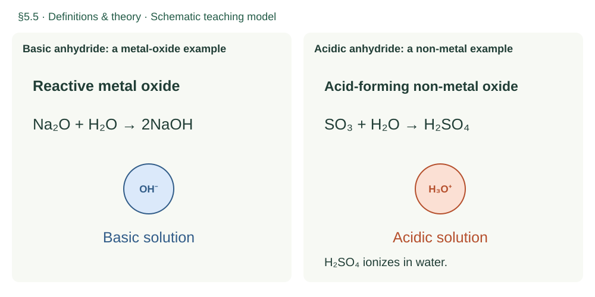
Equations & relationships
Na₂O + H₂O → 2NaOH
O²⁻ + H₂O → 2OH⁻
SO₃ + H₂O → H₂SO₄
CO₂ + H₂O ⇌ H₂CO₃; H₂CO₃ + H₂O ⇌ H₃O⁺ + HCO₃⁻
Derivation & reasoning
- Oxide ion is a strong proton acceptor. Transferring one H⁺ from water to O²⁻ creates OH⁻ from the oxide and another OH⁻ from the water.
- The net ionic equation is O²⁻ + H₂O → 2OH⁻. Adding the sodium spectator ions gives the balanced Na₂O reaction.
- For SO₃, adding one H₂O supplies two H and one more O, giving H₂SO₄. Its aqueous ionization then produces hydronium.
- Separate oxide hydration from acid ionization. Formation of an acid formula does not imply that every resulting acid ionizes completely.
Worked check
One mole of Na₂O that reacts completely produces two moles of NaOH. If 0.0100 mol reacts and the final volume is 1.00 L, [OH⁻] ≈ 0.0200 M. At 25 °C, pOH = 1.70 and pH = 12.30.
Assumptions & common mistakesDo not assume every metal oxide dissolves or every non-metal oxide is acidic. For example, some metal oxides are amphoteric and carbon monoxide is not a typical acid-forming oxide.
Practice toolkit · §5.5
Use these methods alongside the definitions, diagrams and worked check above. This section connects all 11 review questions and their prebuilt solutions to the skills below. Question links open the matching problem in the practice page.
Balance oxide hydration and predict acid/base products
Reactive ionic metal oxides can form hydroxides; many covalent non-metal oxides form oxyacids. Determine the product formula, balance atoms and then consider dissociation or ionization. “Sweetening” acidic soil means neutralizing acidity and raising pH. These oxide trends have exceptions.
SrO + H₂O → Sr(OH)₂; N₂O₅ + H₂O → 2HNO₃; P₄O₁₀ + 6H₂O → 4H₃PO₄
Connect high-temperature kinetics to acid precursors
Ordinary atmospheric N₂ and O₂ react extremely slowly because of their activation barrier, despite being abundant. Combustion temperatures or lightning enable NO formation, followed by oxidation and aqueous chemistry. Sulfur trioxide hydrates to sulfuric acid; NO₂ reactions can generate nitrous and nitric acids.
SO₃ + H₂O → H₂SO₄; 2NO₂ + H₂O → HNO₂ + HNO₃
Explain transport, damage and carbonate protection
Atmospheric transport can carry SOₓ and NOₓ far downwind before acid deposition. Acidity can harm aquatic systems, leach soil nutrients and mobilize aluminum, damage vegetation, and corrode materials. Carbonate geology supplies acid-neutralizing capacity; adding lime or limestone replenishes a finite reserve without stopping continuing emissions.
CaCO₃ + 2H⁺ → Ca²⁺ + CO₂ + H₂O
Distinguish gas capture from catalytic reduction
Alkaline scrubbers capture acidic gases in sulfite/sulfate products, with reagent, energy and waste-management costs. Exhaust catalysts reduce NOₓ toward N₂. Selective catalytic reduction uses NH₃ as a consumed reducing reagent, with a separate regenerated catalyst; ammonia itself is not the catalyst in the overall equation.
2NO + 2CO → N₂ + 2CO₂; 4NH₃ + 4NO + O₂ → 4N₂ + 6H₂O
Further explain
Why do some oxides behave as acids and others as bases?
Oxide behaviour can be understood through the proton-transfer and dissolution reactions available in water. An equation describes a possible pathway; its equilibrium constant determines how far it proceeds.
- For a soluble basic oxide such as Na₂O, the overall equation is Na₂O + H₂O → 2Na⁺ + 2OH⁻. The oxide component accepts protons from water.
- For an acidic oxide, CO₂(aq) + H₂O ⇌ H₂CO₃ is followed by H₂CO₃ + H₂O ⇌ H₃O⁺ + HCO₃⁻.
- Add these equilibria: CO₂(aq) + 2H₂O ⇌ H₃O⁺ + HCO₃⁻. Multiplying their activity constants gives Koverall = KhydrationKa(H₂CO₃).
- Because much dissolved CO₂ remains unhydrated, the apparent acidity of total dissolved CO₂ is weaker than the intrinsic acidity of H₂CO₃ alone. The species named in a constant matter.
Koverall = Khydration × Ka(H₂CO₃)
Make it concrete. Adding CO₂ can lower water’s pH because the linked equilibria produce hydronium. This does not mean every dissolved CO₂ molecule becomes H₂CO₃.
When this applies. This applies the PDF’s method for combining reactions. Insoluble oxides may react little with water, and amphoteric oxides can react with either acid or base. The metal/non-metal trend is not a universal rule.
Physical chemistry connection. §7.2, adding reactions and combining constants · printed pp. 204–206 · PDF pp. 236–238 ↗
06
Oxidation-Reduction and Its Applications
Balance electron transfer, predict redox direction, and explain galvanic and electrolytic cells.
Textbook pp. 351–420 · 5 sections
6.1Oxidation-Reduction
p. 352
Textbook pp. 352–362 · PDF pages 362–372
Definitions
- Oxidation / reduction
- Oxidation is electron loss and an increase in oxidation number; reduction is electron gain and a decrease in oxidation number.
- Oxidizing / reducing agent
- The oxidizing agent accepts electrons and is reduced; the reducing agent supplies electrons and is oxidized.
- Oxidation number
- A formal electron-accounting number assigned by agreed rules; it is not generally an atom’s actual charge in a covalent molecule.
Concepts
Oxidation and reduction occur together because electrons lost must equal electrons gained. An element in its elemental form has oxidation number zero; a monatomic ion’s oxidation number equals its charge. Oxidation numbers sum to the overall species charge. Oxygen is usually −2, with exceptions such as peroxides; hydrogen is usually +1, except in metal hydrides.
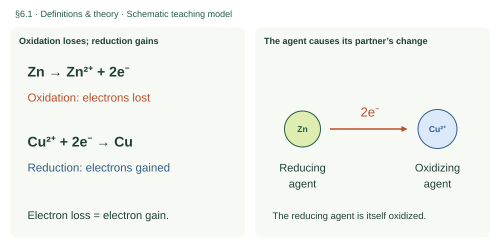
Equations & relationships
Σ(number of atoms × oxidation number) = net species charge
Zn → Zn²⁺ + 2e⁻; Cu²⁺ + 2e⁻ → Cu
Net: Zn + Cu²⁺ → Zn²⁺ + Cu
Derivation & reasoning
- Assign the known oxidation numbers and use the net charge to solve for an unknown one.
- Compare an element before and after reaction. An increase means formal electron loss; a decrease means formal electron gain.
- Write electrons on the product side for oxidation and on the reactant side for reduction.
- Add matched half-reactions and cancel electrons. The species losing electrons is the reducing agent, and the species gaining them is the oxidizing agent.
Worked check
In MnO₄⁻, let Mn be x. Then x + 4(−2) = −1, so x = +7. Conversion to Mn²⁺ lowers its oxidation number by five and requires five electrons per manganese atom.
Assumptions & common mistakesThe oxidizing agent is reduced. Do not swap the agent’s effect on another species with the change the agent itself undergoes.
Practice toolkit · §6.1
Use these methods alongside the definitions, diagrams and worked check above. This section connects all 10 review questions and their prebuilt solutions to the skills below. Question links open the matching problem in the practice page.
Assign oxidation numbers, including exceptions
Use elemental zero, monatomic ionic charge and the sum-to-overall-charge rule. Oxygen is −1 in peroxides and +2 in OF₂; hydrogen is −1 in metal hydrides. Polyatomic-ion charge helps recover a metal’s oxidation state. An average for several carbon or sulfur atoms need not describe each individual atom.
Σ(atom count × oxidation number) = overall species charge
Identify agents and count electrons per specified unit
An oxidation-number increase marks oxidation; its reactant is the reducing agent. A decrease marks reduction; its reactant is the oxidizing agent. Multiply the change per atom by the number of affected atoms before balancing electrons. Distinguish electrons per atom, per molecule and per balanced reaction.
Electrons transferred = number of atoms changed × magnitude of oxidation-number change
Explain periodic trends without replacing table data
Alkali metals are strong elemental reducing agents and halogens strong elemental oxidizing agents. Anions can also donate electrons. Electronegativity offers a qualitative elemental trend, but aqueous redox strength also depends on oxidation state, solvation and conditions; reduction potentials are the appropriate quantitative comparison.
Reducing agent donates e⁻ and is oxidized; oxidizing agent accepts e⁻ and is reduced.
Translate redox observations and check unusual formulas
A dissolving metal, a metal coating and a fading ionic colour can identify complementary half-reactions. Cancel spectators in a net ionic equation. Read the actual printed species: CuNO₃ contains Cu(I), while Cu(NO₃)₂ contains Cu(II). A proposed higher or lower oxidation-state product describes oxidation or reduction but does not alone prove spontaneous formation.
Fe + Cu²⁺ → Fe²⁺ + Cu; Cu + 2Ag⁺ → Cu²⁺ + 2Ag
Further explain
Why must oxidation and reduction always occur together?
Electron transfer conserves charge. One reactant can lose electrons only if another process accepts them; a balanced redox reaction accounts for both sides of that transfer.
- For Zn → Zn²⁺ + 2e⁻, zinc’s oxidation number rises from 0 to +2. For Cu²⁺ + 2e⁻ → Cu, copper’s oxidation number falls from +2 to 0.
- Add the half-reactions. The two electrons appear once on each side and cancel, leaving Zn + Cu²⁺ → Zn²⁺ + Cu.
- Charge is +2 before and +2 after. Atoms are also conserved. Electrons are bookkeeping intermediates in the half-reaction method, not a substance accumulating in the net equation.
- Zn is the reducing agent because it supplies electrons and is oxidized. Cu²⁺ is the oxidizing agent because it accepts electrons and is reduced.
Electrons lost = electrons gained; Zn + Cu²⁺ → Zn²⁺ + Cu
Make it concrete. For a reaction transferring 2 mol electrons per mole of reaction, 0.0100 mol reaction extent transfers 0.0200 mol electrons, corresponding to about 1930 C.
When this applies. Oxidation numbers are formal assignments; in covalent compounds they need not be actual ionic charges. Half-reactions expose electron balance even when a redox process occurs without a separate external circuit.
Physical chemistry connection. §§7.5–7.7, half-reactions and cell reactions · printed pp. 216–219 · PDF pp. 248–251 ↗
6.2Balancing Oxidation-Reduction Equations
p. 363
Textbook pp. 363–378 · PDF pages 373–388
Definitions
- Half-reaction
- An equation showing either the oxidation or reduction part of a redox process, including electrons.
- Electron balance
- Equality of the total electrons lost and gained in the overall reaction.
- Acidic / basic balancing medium
- The stated environment that determines whether H⁺ or OH⁻ may remain in the final equation.
Concepts
Balance each half-reaction for atoms and charge before combining them. In acid, balance oxygen with H₂O, hydrogen with H⁺, and charge with electrons. Multiply to equalize electrons, add, and cancel. For basic solution, add OH⁻ to both sides to eliminate any H⁺, combine H⁺ with OH⁻ into water, and cancel excess water.
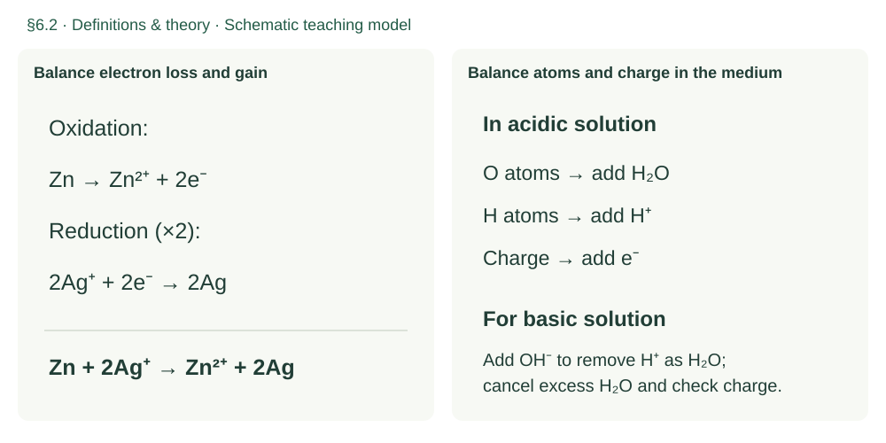
Equations & relationships
MnO₄⁻ + 8H⁺ + 5e⁻ → Mn²⁺ + 4H₂O
Fe²⁺ → Fe³⁺ + e⁻
MnO₄⁻ + 8H⁺ + 5Fe²⁺ → Mn²⁺ + 4H₂O + 5Fe³⁺
Derivation & reasoning
- Balance Mn first. Four oxygen atoms on the left require four H₂O on the right.
- Those four waters contain eight H, so add eight H⁺ on the left. The left charge is now +7 and the right charge +2.
- Add five electrons to the left to reduce +7 to +2. The reduction half-reaction now conserves both atoms and charge.
- Multiply Fe²⁺ → Fe³⁺ + e⁻ by five, add the equations, and cancel five electrons.
- Check the final equation: left charge −1 + 8 + 10 = +17; right charge +2 + 15 = +17. All atom counts also match.
Worked check
For chlorine disproportionation in base, the balanced net equation is Cl₂ + 2OH⁻ → Cl⁻ + ClO⁻ + H₂O. Chlorine changes from 0 to −1 and +1, so equal electron loss and gain occur within the same starting species.
Assumptions & common mistakesUse the reaction products specified by the question; balancing does not predict which products actually form. Never change subscripts to balance an equation, and leave no uncancelled electrons in a complete redox reaction.
Practice toolkit · §6.2
Use these methods alongside the definitions, diagrams and worked check above. This section connects all 7 review questions and their prebuilt solutions to the skills below. Question links open the matching problem in the practice page.
Balance half-reaction charge with electrons
After balancing atoms, total the charge on each side and add electrons to the more positive side, including the less-negative side. The number equals the charge difference. Electrons among reactants indicate reduction; electrons among products indicate oxidation.
Each added e⁻ lowers that side’s total charge by one.
Balance in acidic or basic medium
Balance non-O/H atoms, oxygen with H₂O, hydrogen with H⁺ and charge with electrons. For basic medium, add enough OH⁻ to both sides to remove H⁺ as water, then cancel common water. In the final basic equation no H⁺ should remain. Verify species from the actual problem rather than substituting a more familiar product.
Acid: O with H₂O, H with H⁺, charge with e⁻. Basic conversion: H⁺ + OH⁻ → H₂O.
Use oxidation-number changes to equalize transfer
Calculate the oxidation and reduction changes, including all affected atoms. Multiply half-reactions to equal electron loss and gain, add them, cancel and reduce coefficients. Complex ions retain their ligand inventory. Disproportionation can send one element into several products; if product ratios are unspecified, more than one balanced solution can be possible.
Total electrons lost = total electrons gained; no free e⁻ remain in the summed reaction.
Restore a formula equation and verify conservation
If the question starts with molecular reagents, first isolate and balance the net ionic redox reaction, then restore spectator ions to reconstruct the requested formula equation. Use the requested oxidation endpoint: ethanol converted to acetic acid has different electron transfer from ethanol completely oxidized to CO₂. Formal balancing is not proof of spontaneity.
Final check: every element, net charge, medium, stated products, and smallest appropriate whole-number coefficients.
Apply in practice:Q7
Further explain
Why are water, H⁺, OH⁻ and electrons allowed in balancing?
Aqueous balancing uses species available in the stated medium. Water balances oxygen and hydrogen; acid or base supplies the appropriate proton bookkeeping; electrons then balance charge.
- In acid, begin with MnO₄⁻ → Mn²⁺. Balance oxygen by adding 4H₂O on the right, then hydrogen by adding 8H⁺ on the left.
- The left charge is −1 + 8 = +7 and the right charge is +2. Add 5e⁻ on the left to reduce its charge to +2: MnO₄⁻ + 8H⁺ + 5e⁻ → Mn²⁺ + 4H₂O.
- For a basic-medium example with MnO₂ as product, first obtain MnO₄⁻ + 4H⁺ + 3e⁻ → MnO₂ + 2H₂O in acid-style bookkeeping.
- Add 4OH⁻ to both sides. Replace 4H⁺ + 4OH⁻ by 4H₂O and cancel 2H₂O, giving MnO₄⁻ + 2H₂O + 3e⁻ → MnO₂ + 4OH⁻.
Basic half-reaction: MnO₄⁻ + 2H₂O + 3e⁻ → MnO₂ + 4OH⁻
Make it concrete. In the basic half-reaction, each side has one Mn, six O and four H atoms; each has charge −4. After combining half-reactions, no electrons may remain in the net equation.
When this applies. This extends the PDF’s half-reaction bookkeeping. Balance the product specified by the chemistry: changing medium can change the product, not merely the written H⁺ and OH⁻ terms.
Physical chemistry connection. §§7.5–7.7, half-reactions and their combination · printed pp. 216–219 · PDF pp. 248–251 ↗
6.3Using the Standard Reduction Potential (SRP) Table to Predict Redox Reactions
p. 379
Textbook pp. 379–391 · PDF pages 389–401
Definitions
- Standard reduction potential, E°red
- A half-cell potential measured relative to the standard hydrogen electrode under specified standard conditions.
- Standard cell potential, E°cell
- The difference between the reduction potentials of the cathode and anode half-cells.
- Spontaneous redox direction
- The direction that can operate as a galvanic cell under the specified conditions.
Concepts
Table A7 writes half-reactions as reductions. A more positive reduction potential indicates a greater reduction tendency under the tabulated conditions. Choose the species available, keep the reduction half-reaction, reverse the oxidation half-reaction, and balance electrons. A positive E°cell indicates a thermodynamically favourable direction at standard conditions; the rate may still be slow.
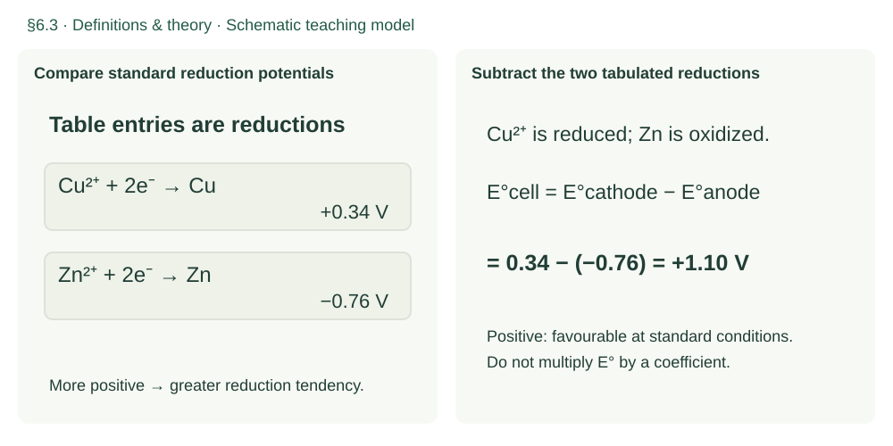
Equations & relationships
E°cell = E°red(cathode) − E°red(anode)
Equivalently: E°cell = E°reduction + E°oxidation
1 V = 1 J C⁻¹; do not multiply E° by a balancing coefficient
Derivation & reasoning
- Both tabulated values are reduction potentials measured against the same reference electrode.
- The cathode carries out the chosen reduction. The anode carries out the reverse of its tabulated reduction, changing the sign of that contribution.
- Adding the reduction and oxidation contributions therefore gives a difference of reduction potentials.
- Voltage is energy per charge. Doubling a reaction doubles both transferred charge and associated energy, leaving their ratio unchanged. Thus electron-balancing coefficients do not multiply E°.
Worked check
For Cu²⁺/Cu at +0.34 V and Zn²⁺/Zn at −0.76 V, Zn oxidation paired with Cu²⁺ reduction gives E°cell = 0.34 − (−0.76) = +1.10 V. Reversing the overall reaction gives −1.10 V.
Assumptions & common mistakesThe ° symbol specifies standard conditions, not every possible mixture. Concentrations and reaction conditions can alter the actual voltage and direction; use the textbook’s stated conditions and notes on Table A7.
Practice toolkit · §6.3
Use these methods alongside the definitions, diagrams and worked check above. This section connects all 21 review questions and their prebuilt solutions to the skills below. Question links open the matching problem in the practice page.
Select available oxidants and reductants
Separate dissolved strong electrolytes into available species and include the specified medium. Choose the strongest available oxidant and reductant in the table model, not a species absent from the mixture. Acidic nitrate can be an oxidant rather than a spectator. Later reactions may follow as the strongest reactant is depleted.
E°cell = E°red(selected reduction) − E°red(pair being oxidized)
Predict direction, then balance the actual reaction
Keep the reduction half-reaction, reverse the oxidation half-reaction and equalize electrons without multiplying E°. Positive E° predicts a favourable standard direction; negative E° favours the reverse. Include H⁺, water or OH⁻ when the selected table reaction requires it, and write a balanced net ionic equation.
E°ox = −E°red; E° does not scale when the half-reaction is multiplied.
Infer a potential ordering from experiments
A spontaneous metal displacement places the oxidant’s reduction pair above the dissolving metal’s pair. Several observations can form an ordered chain without giving exact numerical potentials. For storage compatibility, test whether the solution can oxidize the container; an oxide film can delay an otherwise favourable corrosion reaction.
Observed spontaneous OA + RA → products implies Ered(OA pair) > Ered(RA pair), under the stated model.
Compare water, nonoxidizing acid and oxidizing acid
An active metal can reduce H⁺ to H₂, or reduce water to H₂ and OH⁻. Silver does not dissolve through H⁺ reduction under the simple standard model, but acidic nitrate can oxidize it. When water produces OH⁻, an indicator can reveal the local basic region. Read the appropriate table row for the actual medium.
Mg + 2H⁺ → Mg²⁺ + H₂; 2Na + 2H₂O → 2Na⁺ + 2OH⁻ + H₂
Solve redox titration, standardization and purity
Balance the complete redox equation before applying n = cV and the titrant:analyte coefficient ratio. Include hydrate water in a weighed standard’s molar mass. For a mass percentage, convert analyte moles to mass and divide by sample mass. Use the exercise’s stated comparison threshold without treating a historical scenario as current law.
n(analyte) = n(titrant)νanalyte/νtitrant; mass % = 100nanalyte Manalyte/msample
Further explain
Why are electrode potentials subtracted but never multiplied by coefficients?
Voltage measures energy per unit charge. Doubling a reaction doubles both its available energy and its transferred charge, so the voltage stays the same.
- For the balanced cell reaction, ΔᵣG° = −nFE°cell, where n is moles of electrons transferred per mole of reaction and F = 96 485 C mol⁻¹.
- Write both table entries as reductions. The cathode reaction proceeds as listed; reverse the anode entry to represent oxidation. Subtract the anode reduction potential from the cathode reduction potential.
- If the net equation is multiplied by m, then ΔᵣG° becomes mΔᵣG° and n becomes mn. Dividing −mΔᵣG° by mnF leaves E° unchanged.
- Combine ΔᵣG° = −nFE°cell with ΔᵣG° = −RT ln K: ln K = nFE°cell/(RT). A positive standard cell potential therefore means K > 1.
E°cell = E°cathode − E°anode; ln K = nFE°cell/(RT)
Make it concrete. For Zn/Cu, E°cell = 0.34 − (−0.76) = 1.10 V. With n = 2, ΔᵣG° ≈ −212 kJ mol⁻¹. Doubling the equation doubles that energy but leaves 1.10 V unchanged.
When this applies. A positive E° predicts forward preference under standard conditions. At other compositions use E and Q through the Nernst equation; a potential predicts tendency, not the speed of reaction.
Physical chemistry connection. §§7.7–7.9, Gibbs energy, standard potentials and K · printed pp. 219–224 · PDF pp. 251–256 ↗
6.4The Electrochemical Cell
p. 392
Textbook pp. 392–407 · PDF pages 402–417
Definitions
- Electrochemical / galvanic cell
- A device that converts energy from a spontaneous redox reaction into electrical energy.
- Anode / cathode
- The electrode where oxidation / reduction occurs.
- Salt bridge
- An ionic connection that completes the internal circuit and helps maintain bulk electrical neutrality.
Concepts
Separate the half-reactions so electrons travel through an external wire from anode to cathode. Ions, rather than electrons, carry current through the solution and salt bridge. In a galvanic cell, the anode is negative and the cathode positive. A metal anode can lose mass as it dissolves; a metal-ion cathode can gain mass as metal plates out. An inert electrode provides a conducting surface when the reacting species are not a solid metal electrode.
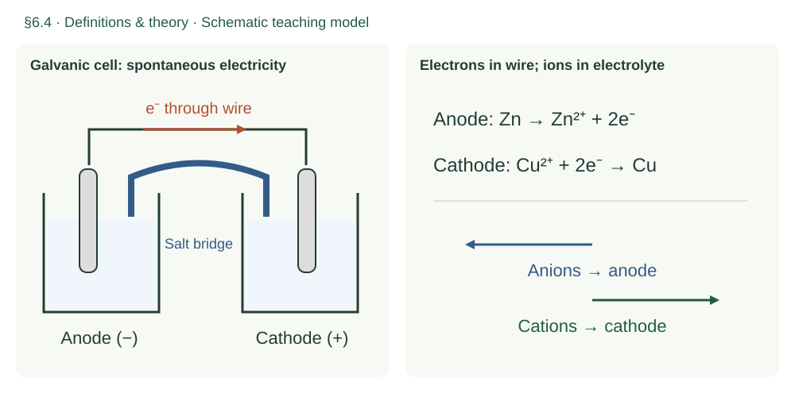
Equations & relationships
Zn(s) | Zn²⁺(aq) || Cu²⁺(aq) | Cu(s)
Anode: Zn → Zn²⁺ + 2e⁻; cathode: Cu²⁺ + 2e⁻ → Cu
Electron flow in the wire: anode → cathode
Derivation & reasoning
- Oxidizing one Zn atom creates Zn²⁺ in the anode solution and releases two electrons to the wire.
- At the cathode, Cu²⁺ accepts those electrons and deposits as copper metal.
- Without ion migration, the anode compartment becomes more positively charged and the cathode compartment loses positive charge. That charge separation opposes further current.
- For this cell, salt-bridge anions migrate toward the anode compartment and cations toward the cathode compartment. This balances ionic charge without transporting electrons through the bridge.
Worked check
If 0.010 mol Zn dissolves in an ideal Zn/Cu cell, 0.020 mol electrons pass through the external circuit and 0.010 mol Cu deposits. The anode loses zinc mass and the cathode gains copper mass.
Assumptions & common mistakesAnode always means oxidation and cathode always means reduction. Their signs change in an electrolytic cell; memorizing only electrode signs leads to errors.
Visual model / 06
Inside a zinc–copper galvanic cell
Trace electron flow outside the solutions and ion movement through the salt bridge.
E°cell = +0.34 − (−0.76) = +1.10 V under the stated standard conditions.
Practice toolkit · §6.4
Use these methods alongside the definitions, diagrams and worked check above. This section connects all 17 review questions and their prebuilt solutions to the skills below. Question links open the matching problem in the practice page.
Label electrodes and both current paths
Oxidation is at the anode and reduction at the cathode. In a galvanic cell the anode is negative and electrons flow through the wire to the positive cathode. Ions carry charge in the solutions and bridge. Separate electrode interfaces allow bulk oxidant and reductant to exchange electrons without directly colliding.
Salt-bridge anions migrate toward the anode; cations toward the cathode.
Choose electrode materials and predict mass changes
A dissolving metal anode loses mass; metal-ion deposition can increase cathode mass. An inert Pt contact is needed for couples without a conducting metal phase, such as H⁺/H₂ or Br₂/Br⁻. Its mass need not increase when gas evolves. Include the specified phases and an ionic connection; the aqueous F₂ example is an idealized table model.
Oxidation: M → Mᶻ⁺ + ze⁻. Deposition: Mᶻ⁺ + ze⁻ → M.
Calculate, recover and re-reference potentials
Subtract the tabulated anode reduction potential from the cathode reduction potential. Rearrange to find an unknown half-cell potential or combine voltage differences. If a new reference electrode is set to zero, subtract its old potential from every half-cell value; physical cell voltages remain unchanged.
Enew(pair) = Eold(pair) − Eold(new reference); E°cell = E°cathode − E°anode
Predict concentration effects and equilibrium voltage
Write the cell reaction and its Q. Increasing oxidant concentration or removing a dissolved oxidation product can lower Q and increase the cell voltage. At cell-reaction equilibrium the open-circuit emf is zero. Changing the area of an existing pure metal does not change its activity or ideal equilibrium emf, although it can affect useful current and losses.
E = E° − (RT/nF)ln Q; for Fe + Pb²⁺ → Fe²⁺ + Pb, Q = [Fe²⁺]/[Pb²⁺]
Apply in practice:Q13
Explain cathodic protection and galvanizing
Connect a more easily oxidized sacrificial metal such as Zn or Mg to the steel through a conducting path and electrolyte. The sacrificial anode supplies electrons and keeps steel cathodic. Zinc also provides a barrier and can protect at scratches while connected zinc remains; the sacrificial material is consumed and needs replacement.
Zn → Zn²⁺ + 2e⁻ supplies electrons that suppress Fe → Fe²⁺ + 2e⁻.
Assess a biological fuel-cell claim
Enzymes can hydrolyze cellulose to glucose, which supplies electrons on oxidation. Renewable or waste feedstocks, mild catalytic conditions and reduced reliance on some hazardous materials are potential advantages. Compare the whole device and material lifecycle rather than assuming any “bio” label proves a lower environmental impact.
Fuel oxidation supplies electrons; the electrode reactions must still conserve atoms, charge and total electron transfer.
Apply in practice:Q14
Further explain
How does composition change a cell’s voltage?
The cell converts a reaction’s Gibbs-energy decrease into electrical work. As the mixture moves toward equilibrium, the chemical driving tendency decreases and so does its reversible voltage.
- Start with ΔᵣG = ΔᵣG° + RT ln Q and the reversible electrical-work relations ΔᵣG = −nFE and ΔᵣG° = −nFE°.
- Substitute: −nFE = −nFE° + RT ln Q. Divide by −nF to obtain E = E° − (RT/nF)ln Q.
- At 298.15 K, use ln Q = 2.303 log₁₀Q and 2.303RT/F = 0.05916 V. This gives the familiar base-10 Nernst equation.
- For Zn + Cu²⁺ → Zn²⁺ + Cu, pure metals have activity 1, so Q = aZn²⁺/aCu²⁺. Accumulating Zn²⁺ or consuming Cu²⁺ raises Q and lowers E.
E = E° − (RT/nF)ln Q; at 25 °C: E = E° − (0.05916 V/n)log₁₀Q
Make it concrete. With n = 2, E° = 1.10 V and Q = 100, E ≈ 1.10 − (0.05916/2)(2) = 1.041 V. At overall reaction equilibrium, Q = K and E = 0.
When this applies. E here is reversible open-circuit emf. A disconnected cell can have nonzero E because electron transfer is blocked; that is not overall reaction equilibrium. Under current, resistance and electrode kinetics reduce terminal voltage. Ions, rather than electrons, carry charge through the salt bridge.
Physical chemistry connection. §§7.6–7.7, cells and Nernst equation · printed pp. 217–222 · PDF pp. 249–254 ↗
6.5The Electrolytic Cell
p. 408
Textbook pp. 408–420 · PDF pages 418–430
Definitions
- Electrolysis / electrolytic cell
- An externally powered redox process / the apparatus driving that process.
- Current, I
- The rate of electric charge flow, measured in amperes: 1 A = 1 C s⁻¹.
- Faraday constant, F
- The magnitude of charge per mole of electrons, approximately 96485 C mol⁻¹.
- Overpotential
- Additional electrode potential needed in practice to drive a reaction at an appreciable rate.
Concepts
An external supply drives a redox direction that would not run as the chosen spontaneous cell. Oxidation remains at the anode and reduction at the cathode; for a simple electrolytic cell the anode is positive and the cathode negative. In molten salts, the ions are the available reactants. In aqueous electrolysis, water can compete with solute ions; reactive electrodes and overpotential can also change which products form. Use the book’s Table A7 notes when comparing these candidates.
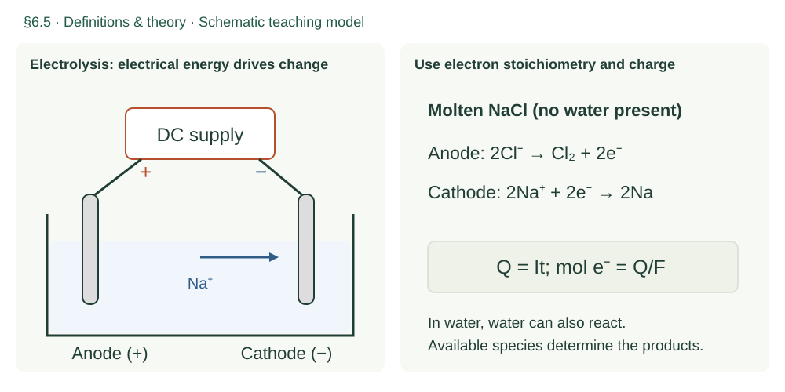
Equations & relationships
Qcharge = It for constant current; n(e⁻) = Qcharge/F
Mᶻ⁺ + ze⁻ → M: n(M) = It/(zF)
Deposited mass m = It × molar mass/(zF)
Molten NaCl: 2Na⁺ + 2e⁻ → 2Na; 2Cl⁻ → Cl₂ + 2e⁻
Derivation & reasoning
- The definition of constant current is I = Qcharge/t, so Qcharge = It. Here Qcharge is electric charge, not the reaction quotient Q.
- Divide the charge by F to convert coulombs to moles of electrons.
- Read the balanced half-reaction: z mol electrons deposit one mole of metal. Divide by z to find moles of metal.
- Multiply by the molar mass to obtain grams. This gives m = ItM/(zF), assuming the stated current deposits that metal with 100% current efficiency.
- For molten NaCl, add the two half-reactions and cancel electrons, giving 2NaCl(l) → 2Na + Cl₂. Aqueous NaCl requires considering water and does not give the same cathode product.
Worked check
For Cu²⁺ + 2e⁻ → Cu at 1.00 A for 600 s, Qcharge = 600 C, n(e⁻) = 600/96485 = 0.00622 mol, n(Cu) = 0.00311 mol, and m(Cu) = 0.1976 g using 63.55 g mol⁻¹.
Assumptions & common mistakesUse seconds for time and include the electron coefficient. Real deposition can be lower because of competing reactions. A thermodynamic minimum voltage alone does not include overpotential or electrical resistance.
Practice toolkit · §6.5
Use these methods alongside the definitions, diagrams and worked check above. This section connects all 12 review questions and their prebuilt solutions to the skills below. Question links open the matching problem in the practice page.
Classify electrolyte and electrolytic cell type
Soluble salts and ionizing acids provide mobile ions; neutral sugars do not. In the textbook’s types, type 1 is molten salt, type 2 aqueous solution with inert electrodes, and type 3 includes an active electrode supplying reacting ions. The DC positive terminal connects to the electrolytic anode and negative terminal to the cathode.
Oxidation at anode (+); reduction at cathode (−); cations migrate to cathode and anions to anode.
Choose products from all available electrode reactants
In a melt, no water competes; molten NaCl can give Na and Cl₂. In water compare solute species, water or H⁺/OH⁻, and any reactive electrode. Water reduction normally prevents aqueous Na or Al deposition. Halide/oxygen anode selectivity also depends on concentration and overpotential; follow the supplied table notes rather than relying on a bare standard ranking.
Cathodic water reduction: 2H₂O + 2e⁻ → H₂ + 2OH⁻; water electrolysis overall: 2H₂O → 2H₂ + O₂
Separate reversible voltage from operating voltage
Calculate the chosen decomposition Ecell from reduction potentials. If negative, its magnitude is the ideal opposing emf under those stated conditions. An applied source must exceed it to sustain current, accounting for overpotential and resistance. Equal-activity active-metal transfer can have a zero ideal reversible difference while still needing a finite operating voltage.
Vapplied for operation > reversible opposing emf + required kinetic and ohmic losses; standard values are a stated-condition estimate.
Explain plating, refining and product separation
The object to plate is the cathode. A suitable active metal anode can replenish the ions deposited at the cathode, allowing plating or purification from an impure anode. Keep molten sodium and chlorine separated to prevent recombination. Dissolving alumina in a molten electrolyte lowers the energy demand relative to melting pure alumina.
Silver transfer: anode Ag → Ag⁺ + e⁻; cathode Ag⁺ + e⁻ → Ag.
Compare impressed-current and sacrificial protection
Both methods make the protected structure cathodic. Galvanic protection uses spontaneous oxidation of a more reactive attached metal; impressed-current protection uses an external DC supply, with steel connected to the negative terminal and a separate positive anode.
Protection suppresses metal oxidation by supplying electrons to the structure.
Apply in practice:Q9
Relate current to electron and product amounts
For an amount calculation, integrate current over time or use It at constant current, divide by Faraday’s constant, and apply the electron coefficient of the selected half-reaction. This extends the electrode-reaction reasoning; the current-to-mass worked check above provides a numerical example. Specify current efficiency if less than all charge forms the desired product.
Qcharge = It; n(e⁻) = Qcharge/F; n(product) = n(e⁻)νproduct/νelectrons; m = nM
Further explain
How does current determine the amount produced by electrolysis?
A power supply drives electron transfer in the chosen nonspontaneous direction. Counting the charge sent through the circuit counts the electrons available to form product.
- For constant current I over time t, Qcharge = It. Since one mole of electrons carries F coulombs in magnitude, n(e⁻) = It/F.
- If z electrons are required per product unit, the product amount is n(product) = It/(zF). Multiplying by molar mass M gives the deposited mass.
- For Cu²⁺ + 2e⁻ → Cu, z = 2. A current of 1.00 A for 1930 s transfers 1930 C, or about 0.0200 mol electrons, producing 0.0100 mol Cu at 100% current efficiency.
- The reversible minimum electrical work for a forced reaction is its positive ΔᵣG. Since charge per mole of reaction is nF, the opposing reversible voltage magnitude is ΔᵣG/(nF). Actual operation requires additional voltage for resistance and electrode overpotentials.
n(product) = It/(zF); mass = MIt/(zF)
Make it concrete. Using M(Cu) = 63.55 g mol⁻¹, the example deposits about 0.636 g Cu. At 80% current efficiency, the amount deposited is 0.80 × 0.636 ≈ 0.509 g.
When this applies. The mass formula is charge-conservation bookkeeping extending the PDF’s electrical-work relation. If current varies, use Qcharge = ∫I dt. Competing electrode reactions reduce yield; the anode is always oxidation and the cathode reduction, including in electrolysis.
Physical chemistry connection. §7.7, charge and electrical work · printed pp. 219–220 · PDF pp. 251–252 ↗ · §25.9, electrode overpotential · printed pp. 938–939 · PDF pp. 970–971 ↗
Appendix — Reference Tables
Use the book’s reference tables alongside the matching tutorial sections. Values and exceptions should be read from the supplied PDF.
| Reference table | Use it for | Printed page |
|---|---|---|
| Table A1 Atomic Masses of the Elements | Molar masses for amount–mass conversions. | 422 |
| Table A2 Names, Formulas, and Charges of Some Common Ions | Identify ion formulas and charges before balancing. | 423 |
| Table A3 Solubility of Common Compounds in Water | Predict precipitates and choose qualitative-analysis reagents. | 424 |
| Table A4 Solubility Product Constants at 25°C | Use Ksp values with temperature and salt stoichiometry. | 425 |
| Table A5 Relative Strengths of Brønsted-Lowry Acids and Bases | Compare conjugate pairs and obtain Ka data. | 426 |
| Table A6 Acid-Base Indicators | Match a colour-transition interval to a titration curve. | 427 |
| Table A7 Standard Reduction Potentials of Half-Cells | Select half-reactions and calculate standard cell potentials. | 428 |
Source and scope. The chapter hierarchy, section titles, and reading links follow BC Science Chemistry 12, table of contents (printed p. v). Explanations and worked checks are original study notes aligned to those topics. Definitions and empirical relationships are distinguished from algebraic derivations. For scanned diagrams, full examples, exercises, and reference data, use the linked textbook pages.